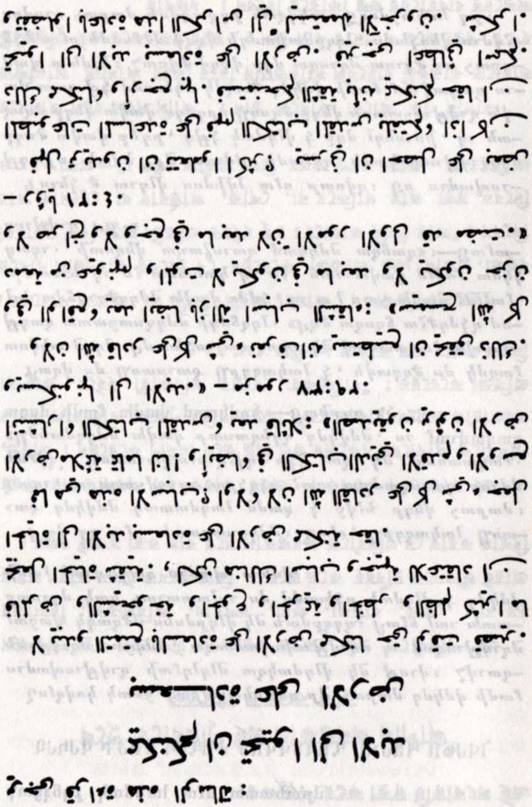
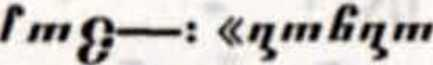
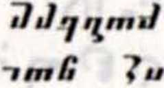
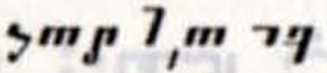
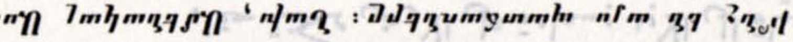
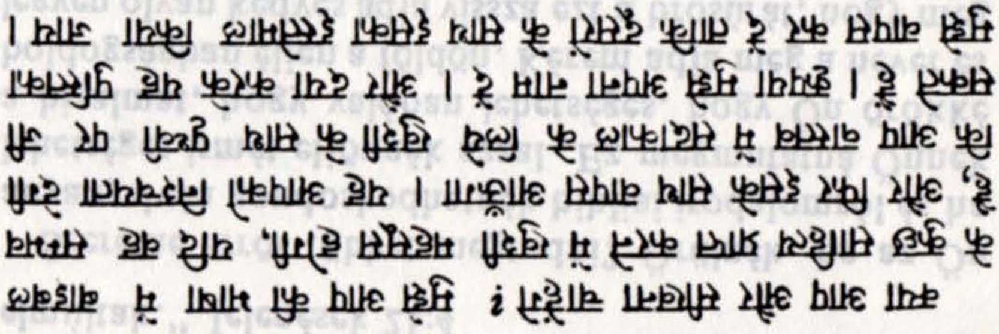
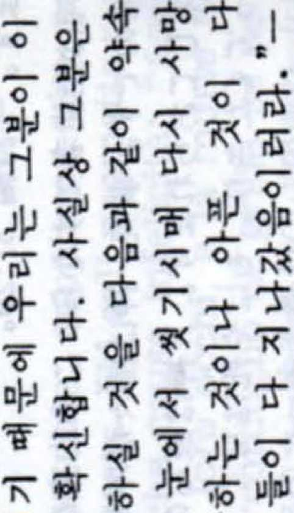
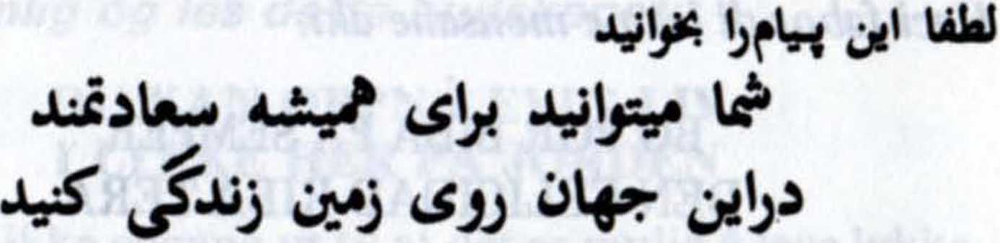
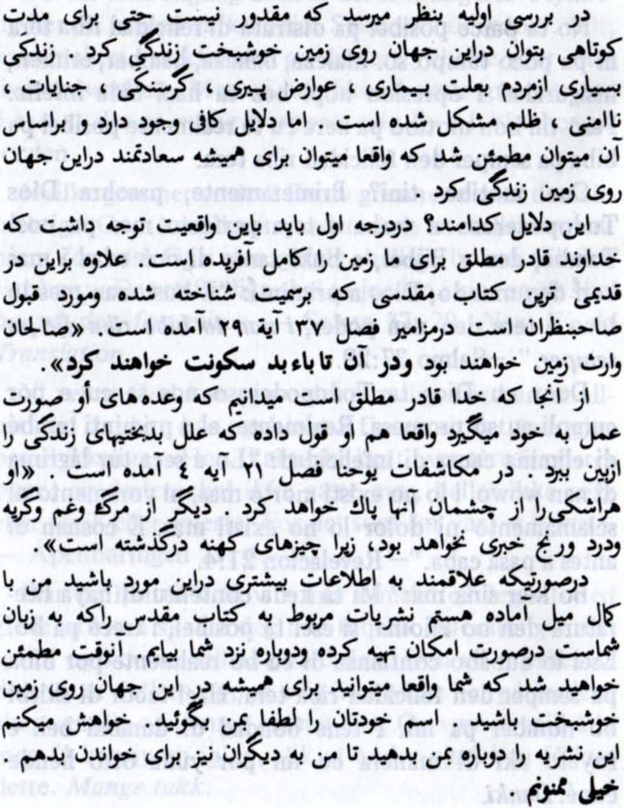
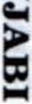

Copyright, 1983 WATCH TOWER BIBLE AND TRACT SOCIETY OF PENNSYLVANIA
PUBLISHERS Watchtower Bible and Tract Society of New York, Inc.
International Bible Students Association 25 Columbia Heights
Brooklyn, New York 11201, U.S.A.
Made in the United States of America
This booklet is designed to help you preach the good news to persons in your territory who speak a tongue that you do not understand. Having determined the householder’s language, let him read the printed witness on the appropriate page in this booklet. First, however, point to the words that request the householder to read the printed message.
After he reads it, show him a publication that is available in his language. If you do not have one, show him what the publication looks like even if it is not in his language. Perhaps you can show him the book You Can Live Forever in Paradise on Earth and point out some of the pictures, especially those illustrating living on earth in the Paradise New Order. Indicate in some way, such as by pointing to the second sentence of the last paragraph of the printed witness, that you will try to return with a copy of a publication in the householder’s language. You could write down the amount of the contribution on a piece of paper.
You can check with your literature servant as to what publications are available for any particular language. However, The Watchtower is available in most of the languages listed in this booklet.
Put Good News for ALL Nations to good use. By using the witness in this booklet, you will be searching for persons who are “rightly disposed for everlasting life.”—Acts 13:48.
THE PUBLISHERS
Hiligaynon ....... 22
Lees asseblief hierdie boodskap:
Dit lyk of geluk op aarde ons nie eens n kort rukkie beskore is nie. Siekte. veroudering. honger. misdadigheid. onveiligheid en verdrukking maak die lewe dikwels ondraaglik. Maar daar bestaan goeie redes om te gio dat dit werklik moontlik is om vir ewig in geluk op die aarde te lewe.
Wat is hierdie redes? Eerstens, omdat die al-magtige God die aarde net reg gemaak het vir die mens! En in die bekendste antieke heilige boek. die Bybel, beloof hy: ‘Die regverdiges sal die aarde be-sit en vir ewig daarop woon. ’’—Psalm 37:29.
Omdat God almagtig is. weet ons dat by daardie belofte kan vervul. Trouens. by beloof ook om die oorsake van ongelukkigheid weg te neem: ..God sal al die trane van hulle oe afvee. en daar sal geen dood meer wees nie; ook droefheid en geween en moeite sal daar nie meer wees nie. want die eerste dinge het verbygegaan.”—Openbaring 21:4.
Wil u graag meer hieromtrent weet? Ek sal met graagte Bybellektuur in u taal probeer bekom. indien dit moontlik is. en dit vir u bring. Dit sal u die versekering bied dal u werklik vir ewig in geluk op die aarde kan lewe. Verstrek asseblief u naam. En gee asseblief hierdie boekie aan my terug sodat ander dit ook kan lees. Dankie.
S 3IHVMV
-iiphu i]lin*]lnil
—i,n vid™1:
J y qq i >] t u n m // nt J It
J J tun
: It] J In nt
'ffi’l v!d™i
-*U1
^Ijnnt FntTW .] UI if In
* ^JJn ijutijln Gilm Jul
• rmnd! 7 UI tjln
Jnjut Fmr^tnutnu
• 1'i^liJ'jlt JJ'juumyuimln '{’"'Jf]
J In nt J ! 7yrp7 ml]i]nm
: 6g‘ 77 nuj,^,n(l—• «gi|hmD^ ilmiJFn firnl}! ilugm gm£|ini|nnf ~1U * JJiJljJy ^rjhr^mvmf) ijutijln JJ'jr^JmljJjj^ • rmr^mutnunj iHj r^nt ) J1 r^tJ%r^iulin^nt~iuutn*Q j^iJ<l'i)lt
in ml ^7 1‘lymrlirrT1 i~tjntf^
y qntihl 1 nt ilntutntt!itif !jily qnt »
—ut
JJi it n
zltjJlnnt nJntJtu r^nt y ut ij~t nt F F mil Ji i]ill]i]'] y tjl^jmlf n *]lrtmi)ij Ju ~tulntutntinty Jqr^unt^
—mmln ~tml GFm*I innnnJmh Jit JlqnJultu JJnntqli rJmvmf
ntlnntnnt KJJiJqu * Jr^-iiJf^tuli nt i77y7yrntjt r^tij~tunJm J tu
“HJIi/n "CnjMU MJQS4MT18 imJh etld'b 4JhJQ
il p mb tn mln nfm Imbilmf]
’jfal'IC1 TO1 w^pe, 555 frlTSlM 111 W W fi 111 m1r, <1^11. ^1n» <ninf, fatim
«rr®t fine1 ?fa<f 1c1 'jc’i i fa's 1n1 1n«i 1m fatin 1m ci ’jfaik1 1i^1t1 3c« m 1n 111! i«i 1
<5$ 1H1«fal fa fa r W 1111 f »r ’fa’tfa’ni ’jfaflC1 WWfCW ’T1C’R «RJ fas 1C1t fatri 1C1Cf 1 I 11T®, >fa«TEfa <411 Witt1 Cl1ll fa^1 1lfaa ‘J^1, 11tHC»I fafa ejfasi 1ncssr: “«rrfac1n c^cxi 1fe1r?r ftc<» 1ifnri fan1 1«m m 1fac< i—$11 i
ifai nt'ffa’rpi i nwn srtfa fafa 11 2c1 imw i to®:, fafa <4>e «rfa3H 1cmi ci §:cii fTHefai ifaci farn: fafa 1nrur< ®tc1 «rfafe 13$ fa»? uotm
facn, v^r <nr crfaci n, on1. 11 cmi1 1h itfaci n ; 1n1i it® «w fan w1fa ®^»i 1”—e1i 0:8
Nona nponeTeie Toaa cbofimeHMe;
l/IE MOXETE 3AB0HArU
AA XI/IBEETE UJACTAHBI/1 HA 3EIVIRTA
har/iBWAa, He hb e BbanowHO, Aopn h aa Kbco epene hobbh as ce pamea na yacTMBTo na aeiiRTa. bo/iecT, cTapoci, rnaA» npe-CTbnneHHR, HecwrypHOCT h noflTwcHMHecTbo HBCTQ flOnpHHaCRT 33 HBLUaCTBH HiWBOT. Cb“ mecTByaaT o6ase AoOpn ocHoaaHMR, ne abm-CTBHT8/1H0 B Bb3MOH<HO, 33BMHaTH £3 C8 H<H~ B8B maCTflMBO HB 38MRTB.
How ca T63H OCHOB3HWR? FlbpaO, 331U0T0 BcenorbinwR Bor e Hanpaew/i 36mrt3 Tana cbabpwBHO roflHa aa Hac! Ocbbh Toaa tow ofiBiuaaa a BmO/ihrtb, Haw-cTapaTa nnwra a CBBTa, Ha HORTO MHOTO BRpBaT: ’UpaBeAHw Te, cariw to , me npwiewaBaT aeriRTa, m tb aa-BHHarw me whbert na her," — flea am 37:29.
Hue anasM, hb Bor Tosa momb as ocb-mecTBw, aaujoTO e eceMorbm- Tom ofiBmaea AOpn, Aa npenaxHB bcmhhm npwHHHw sa neinacTwe: "Toh me obbpiue bcrh3 cbnaa ot OHWTB WM, H CMbpTTa 8BH8 HRM3 Aa CblljeCT-eyaa.HHTo cwpbO, hmto nncbH, hhto fiouHa. npeAHWHmtb nema ca npenwHanw," — OTHpo-BeHHe 21:4.
WenaeTe nw as yanaeTe noaese aba apbawa c tobb? Bmx ce paAea/i as HanepR, ano e BbanoMno, 6n6newcKa AHTepaTypa hb BaiuHR B3kh m nan ma Bm noceTR. Tr me Bh yeepw, mb Bmb AewcTBwTe/iHO Moweie aaaM-hbtm Aa wwaeeie macT/iwew Ha aeriRTa. Mona HaweTe nw wneTo ch. M bho oShhbtb,Bbpwe-TB MH T33W OpOUjypB , 33 A^ MOTB A3 R ynO“ TpsdR npn Apyrn. BnaromapR 0n.
Palihog Basaha Kining Mensahea:
Maorag dili matagamtam ang kalipay sa yuta bisan sa mubong panahon. Ang sakit, pagkatigulang, gutom, krimen, pagkawalay-kasegurohan ug pang-lupig sagad mopalisod sa kinabuhi. Apan du nay daghang maayong katarongan sa pagtuo nga po-sibleng mabuhi nga walay kataposan sa kalipay sa yuta.
Unsa ang maong mga katarongan? Una, ang Di-
yos nga Labing (lamhanan nagbuhat sa yuta nga hingpit alang kanato! Gawas pa, sa pinakakaraan
ang Bibliya, siya nagasaad: “Ang mga matarong
magapanunod sa yuta. ug sila magapuyo sa walay kataposan ibabaw niana."—Salmo 37:29.
Kay Labing Gamhanan man ang Diyos. kita nahi-balong siya makapatuman niini. Ngani, siya nagasaad usab sa paghanaw sa tanang hinungdan sa kasubo: “lyang pagapahiran ang tanang luha gi-kan sa ilang mga mata, ug mawala na ang kamatayon, ni aduna pay pagbalata ni paghilak ni kasakil pa. Ang unang mga butang miagi na.“—Pinadayag 21:4.
Buot ba nimong hisayran ang dugang pa? Mali-pay akong mokuhag basahon sa Bibliya diha sa imong pinulongan, kon kana posible, ug mobalik ako nga dala na kana. Kana mohatag kanimog pag-salig nga ikaw mabuhi gayod nga walay kataposan sa kalipay sa yuta. Palihog ihatag kanako ang imong ngalan. Ug iuli kining pulyetoha kanako aron magamit sa uban. Salamat.
« flX ®
K E IE W- , ft M -H It si -H g K 0 « W , W ffi S !» its £: % Ha 4H MH . « « ifl W « « « UK $ * , Its !SJ tn li£ <r UK « es
jg « is AS g ft £ s W
M
§ s Q
Molim Vas proiitajte ovu vijest:
Izgleda nemogude makar samo za kratko vrijeme radovati se sreci na Zemlji. Bolest, starost, glad, kriminal, nesigurnost i tlaCenje, des to doprinose nesretnom iivotu. Ali, postoje dobri razlozi za vjerovanje da je zaista moguce zauvijek u sreci iivjeti na Zemlji.
Koji su to razlozi? Prvo, jer je svemogudi Bog za nas nadinio Zemlju potpuno prikladnom. Osim toga obedaje On u Bibliji, najstarijoj knjizi, kojoj takoder mnogi poklanjaju povjerenje: „Pravednici (sami)posjedovat de Zemlju, i oni de zauvijek na njoj stanovati.” — Psalam 37:29.
Mi znamo da to Bog mo2e ostvariti jer je On svemoguc. On nam dak obedaje da de odstraniti sve uzroke nesrece: ,,On ce otrti svaku suzu s njihovih odiju, i smrti vi5e nece biti, ni tuge, ni vike, ni boli. PrijaSnje stvari su proSle.” — Otkrivenje 21:4.
Zelite li o tome viSe saznati? Radovat de me nabaviti neSto biblijskih publikacija na VaSem jeziku, te ako je moguce, s time ponovo dodi. To de Vam pruZiti zasiguranje da zaista moZete zauvijek u sredi 2ivjeti na Zemlji. Molim Vas recite mi VaSe ime i vratite mi Ijubazno tu broSuru da bih ju mogao upotrijebiti u korist drugih. //K4L/1.
Prostm, tttte to to posetstvl:
ZdA se, 2e neni mo2ni tiSit se ze Stisti na Zemi ani po krátkou dobu. Nemoci, st&rnuti, hlad, zloiiny, nejistota a utlak — to jsou vfci, kterd iini 2ivot strastiplnym. Jsou vSak dobri duvody k viFe, 2e je opravdu mo2ni 2ft nav2dy a Sfastni na Zemi.
Jaki jsou to duvody? Je to v prvi Fadi proto, 2e vSemohouci Buh uiinil pro nAs Zemi dokonalou. Navic, ve staroviki a nejrozSiFenijSi svati knize, v Bibli, Buh slibuje: „Spravedlivi budou vlastnit Zemi a budou na ni navtdy pfebyvat.” — Zalm 37:29.
Buh je vSemohouci, a proto jsme si vidomi toho, 2e je schopen to uskuteinit. Slibuje taki, 2e odstranl vSechny pFiiiny neStisti: „SetFe jim ka2dou slzu s oil a smrt ji2 nebude a nebude ji2 ani truchleni ani kFik ani bolest. DFivijSi vici pominuly.” — Zjeveni 21:4.
Dozvidil byste se rAd o tom nico vic? Bude mi tiSit, budu-li si moci opatfit nijakou biblickou literaturu ve VaSem jazyku a navStivit V£s s ni. To VAm poskytne duviru, 2e opravdu mu2ete 2it nav2dy a Stastni na Zemi. Sdilte mi, prosim, svd jmino a vratte mi laskavi tuto bro2uru, aby mohla jeSti poslou2it jinym. Dikuji Vdm.
Laes venligst dette budskab:
Selv for en kortere tid synes det umuligt at opnA lykke pA jorden. Sygdom, suit, alderdom, krimina-litet, utryghed og undertrykkelse kaster alt for ofte en mork skygge over tilvaerelsen. Men der er gode grunde til at tro at det virkelig er muligt at opnA evigt liv i lykke pA jorden.
Hvilke grunde? Jo, for det forste har den almsegtige Gud skabt jorden som et fuldkomment hjem til os. Og for det andet lover han i den gamle og mest udbredte hellige bog, Bibelen: „De retfaer-dige arver landet og skal bo der til evig tid," — Salme 37:29.
Da Gud er almaegtig, ved vi at han kan opfylde dette lofte. Han har filmed lovet at han vil fjerne Arsagerne til sorg og elendighed: „Han vil torre hver tAre af deres ojne, og doden skal ikke vaere mere, heller ikke sorg eller skrig eller smerte skal vaere mere. De tidligere ting er forsvundet." — Abenbaringen 21:4.
Kunne du taenke dig at vide mere om dette? Jeg vil vaere glad for at skaffe dig noget bibelsk laesestof pA dit eget sprog, hvis det er muligt, og vende tilbage med det. Det vi) give dig flere grunde til at tro at det virkelig er muligt at opnA evigt liv i lykke pA jorden. MA jeg bede om dit navn? Og mA jeg bede dig om at give mig brochuren tilbage, sA jeg kan bruge den igen hos andre? Mange tak.
Leest u alstublieft deze boodschap:
Geluk op aarde — dat schijnt zelfs voor kor-te tijd niet mogelijk te zijn. Ziekte, ouderdom, honger, misdaad, onzekerheid en onderdrukking maken het leven vaak ellendig. Maar er zijn goede redenen om te geloven dat het werkeljjk mogelijk is voor eeuwig in geluk op aarde te leven.
Wat zjjn die redenen? Allereerst omdat de Al-machtige God de aarde gewoon volmaakt voor ons heeft geschapen! En in het oude, wijd en zijd aanvaarde heilige boek, de bijbel, belooft hij: „De rechtvaardigen, die zullen de aarde bezitten, en zij zullen er eeuwig op verblijven.” — Psalm 37:29.
Omdat God almachtig is, weten wij dat hij dit tot stand kan brengen. Hij belooft trouwens ook dat hij alle oorzaken van ellende en verdriet zal weg-halen: „Hij zal elke traan uit hun ogen wegwissen, en de dood zal niet meer zijn, noch rouw, noch ge-schreeuw, noch pijn zal er meer zijn. De vroegere dingen zijn voorbijgegaan.” — Openbaring 21:4.
Zou u hier graag meer over willen weten? Ik zal m’n best doen om wat bijbelse lectuur in uw taal te krijgen en kom dan graag bij u terug. Die bijbelse lectuur zal u het vertrouwen geven dat u werkelijk voor eeuwig in geluk op aarde kunt leven. Ik zou graag uw naam noteren. En mag ik deze brochure alstublieft terug hebben, dan kan ik die weer voor anderen gebruiken. Dank u wel.
Please Read This Message:
It does not seem possible to enjoy happiness on earth even for a short time. Sickness, aging, hunger, crime, insecurity and oppression often make life miserable. But there are good reasons for believing that it really is possible to live forever in happiness on earth.
What are these reasons? First, because Almighty God made the earth just perfect for us! Also, in the ancient and most widely believed holy book, the Bible, he promises: “The righteous themselves will possess the earth, and they will reside forever upon it.”—Psalm 37:29.
Because God is Almighty we know he can bring this to pass. In fact, he also promises to do away with the causes of unhappiness: “He will wipe out every tear from their eyes, and death will be no more, neither will mourning nor outcry nor pain be anymore. The former things have passed away.”—Revelation 21:4.
Would you like to learn more? I will be glad to obtain some Bible literature in your language, if that is possible, and return with it. It will give you confidence that you really can live forever in happiness on earth. Please give me your name. And kindly return this booklet to me for others to use. Thank you.
Olkaa hyva ja lukekaa tama sanoma:
Nayttaa silta, ettei maan paalla voida nauttia onnel-lisuudesta lyhyttakaan aikaa. Sairaudet, ikaantymi-nen, nalka, rikollisuus, turvattomuus ja sorto tekevat elaman usein kurjaksi. Mutta on hyvat syyt uskoa sii-hen, etta on todella mahdollista elaa ikuisesti onnelli-sena maan paalla.
Mitka nuo syyt ovat? Ensinnakin Kaikkivaltias Jumala teki maapallon aivan täydelliseksi meille! Lisaksi han antaa Raamatussa, vanhimmassa pyhassa kirjassa, johon uskotaan erittain yleisesti, seuraavan lupauk-sen: "Vanhurskaat perivat maan ja asuvat siinä iankaikkisesti. ” - Psalmit 37:29.
I'iedamme, etta Jumala voi tayttaa tämän, koska han on Kaikkivaltias. Han lupaa myds poistaa kaiken, mika aiheuttaa onnettomuutta: "Han on pyyhkivii pois kaikki kyyneleet heidan silmistaan, eikä kuolemaa ole enaa oleva, eikä surua eikä parkua eikä kipua ole enaa oleva. Entiset ovat kadonneet.” - Ilmestys 21:4.
Haluaisitteko saada lisaa tietoa tasta asiasta? Han* kin mielellani raamatullista kirjallisuutta omalla kielellänne, jos se on mahdollista, ja tuon sita teille. Niin voitte oppia luottamaan siihen, etta on todella mahdollista elää ikuisesti onnellisena maan päällä. Voisittekö antaa minulle nimenne ja palauttaa tämän kirjasen, jotta toisetkin voivat kayttaa sita? Kiitos.
Veuillez Ure ce message:
Il semble impossible d’etre heureux sur la terre, meme peu de temps. La maladie, la vieillesse, la faim, la criminalite, l’insécurité et l’oppression rendent la vie pénible. Pourtant, nous avons de bonnes raisons de croire qu’il sera vraiment possible de vivre éternellement dans le bonheur sur la terre.
Quelles sont ces raisons? Premierement, le Dieu Tout-Puissant a fait la terre parfaite a notre intention. D’autre part, dans la Bible, le livre saint tres ancien et le plus largement accepte, Dieu fait cette promesse: “Les justes possederont la terre, et sur elle ils resideront pour toujours. 99 — Psaume 37:29.
Puisque Dieu est tout-puissant, nous savons qu’il est capable de réaliser cela. En fait, il promet egalement de faire disparaitre les causes de malheur; nous lisons: “11 essuiera toute larme de leurs yeux, et la mort ne sera plus; ni deuil, ni cri, ni douleur ne seront plus. Les choses an-ciennes ont disparu.” — Revelation 21:4.
Aimeriez-vous en apprendre da vantage a ce sujet? Je serais heureux de me procurer quelques ecrits bibliques dans votre langue, si cela est possible, et de vous les apporter. Ils vous don-neront 1’assurance qu’il est vraiment possible de vivre éternellement dans le bonheur sur la terre. Veuillez me donner votre nom, s’il vous plait, et me rendre cette brochure qui me sera utile pour d’autres personnes. Merci,
Lesen Sie bitte diese Botschaft:
SIE kOnnen für immer in GLÜCK AUF DER ERDE LEBEN
Es scheint nicht einmal fur kurze Zeit moglich zu sein, in Gluck auf der Erde zu leben. Vielen wird das Leben durch Krankheit, Altersbeschwerden, Hunger, Kriminalitat, Unsicherheit und Bedriik-kung schwergemacht. Es gibt aber gute Griinde, zu glauben, daß es wirklich moglich ist, fur immer in Gluck auf der Erde zu leben.
Welche Griinde sind das? Da ist zunachst die Tatsache, daß Gott, der Allmachtige, die Erde fur uns vollkommen machte. AuBerdem verheiBt er in dem altesten, anerkanntesten heiligen Buch, der Bibel: „Die Gerechten selbst werden die Erde be-sitzen, und sie werden immerdar darauf wohnen“ (Psalm 37:29).
Da Gott allmachtig ist, wissen wir, daß er diese VerheiBung wahr machen kann. Tatsachlich verspricht er auch, die Ursachen fur ein ungliick-liches Leben zu beseitigen: „Er wird jede Trane von ihren Augen abwischen, und der Tod wird nicht mehr sein, noch wird Trauer, noch Geschrei, noch Schmerz mehr sein. Die f riiheren Dinge sind vergangen" (Offenbarung 21:4).
Mochten Sie mehr dariiber erfahren? Ich bin gern bereit, biblische Literatur in Ihrer Sprache zu besorgen, wenn das moglich ist, und dann wiederzukommen. Sie werden die Zuversicht erlangen, daß Sie wirklich fur immer in Gluck auf der Erde leben konnen. Sagen Sie mir bitte Ihren Namen. Und geben Sie mir bitte diese Broschiire wieder zuriick, damit ich sie anderen zum Lesen geben kann. Vielen Dank.
JlapaxotAd* AiaGdcTE t© ’'Ay ycApa Aut©:
<I>aivErai dniftavo vd xaTaq>EQEi xaveig vd dnoXawEi TT]V EUTVX<a TtdvO) OTT| yrj, ECfTlD xai ytd ovvTopo XQOVIZO bidotqpa. ’H dppioana, rd yqoaTEid, fj Jitiva, to EyxXq-pa, f| dvaaqiaXeia xai q xarajuEaq xdvovv mr/vd tt| t>rj 0Xi6e(>t). ’AXXa vndpyovv oo6apoi Xoyoi yid vd jtigteve-te on npaypauxa Eivai bvvato vd £e!te yid nd via pE ev-TV%ia ottj yip
Flown sTvai 01 X6yoi avroi; 11 porta to yEyovog on 6 FI avTofiuvapog 0Eog tqniafe tt| yf| teXeio yia pag! E-niaqg, ott| Bi6Xo, hop slvai to juo dp/aTo ayio FnfiXio xai nov to juotevow jtEpioooTEpoi ano 6noiof>T|noTE aXXo 6l-6Xio, d 0e6; vnooxETai: «Oi bixatoi ^eXovoi xXi]povopr|GEi tt|v yf)v, xai eji’ auTfjg ft e X o v a i xaTOixEi e i; t 6 v a i w v a».—•TaXpog XV 29.
*EnEi&r| 6 0e6; sTvai 11 avroftvvapog yvtopuovpE on pnopEi vd to xdvEi auTO. Flpdypau, unoo/ETai Enioi|g vd E^aXsiipEi Tig aiTiEg Tfjg ftuoTV/iag: «AeXei E^aXEupEi d 0s6g nav ftdxpvov ano twv 6 pftaXpcov auTwv, xai 6 ftdvaTog 6ev OeXei vnapgEt jiXeov, ovie nEvftog ovte xpavyrj ovte novog 5ev fteXovoiv vndp/Ei xXeov bion tu nywia napT)Xftov».—’AnoxdXvipig xa' 4.
0d OeXote vd pdftETE jiEpionoTEpa; EvYapioTtog ftd npo-pi|ftEVTU) xdnoia Bi6Xixrj Exdooq <nrj yXonjaa nag d'v auro sTvai 6vvato, xai ftd ^avaipftd) vd nag ttjv q>Ep<o. 0d oag 6oqftr|(7Ei vd 6E6atioflEiTE oti npayparixd pnopEitE vd £eite yid Jidvra jae Eunola ottj yfj. FlapaxaXw Suxhe poo to oyopd nag. Kai, dv e/ete Tqv xaXoovvq, e mot p tip re pov to 6i6Xidpio avro yia vd to XQqaiportoirpovv xai aXXoi. Sag EvxopioTW.
jmi sm! mi H im mm:
HUI MIHH HU MfJ V’'41 MM Mfddl midE Hl^Ml art «/?l<J d«Q. HiEMl MHl^, «fd, mddlHdl md «3«H ®idd rnVrnt pint oi«u<l i a. mm* 3, mg Hidm hu mumI iRIJ.1 W i if41 MM UHa HU ’d'dl MUg‘ 'HM'MM Hid 5.
’Hl SlM$l JHl « ? M^j ilMSJ rt >S i, ML< a Cid Hid EM miMQJl HU mi gwld
MueQ «UM4 Hl»Hdl MMlMdl ^MdS, Hl&HHHi, d MHd mtM W : “<Hl*flmi Mid 'i«Qdl <U«U HIHH, md dMl mdl M* «JHH HU HHH.”—’(IdlllH 33:29
miM^l ’ntjl’X olid i EM H<a(jdHl«i UlMld JR^L d mi<3‘ <Vld M $ «l a? is. UilSdHi, d £:Hdi JRftld EM Kllj hpi MMd miM 5 : “d d’xidl mi'diHi^’ ems mi$ •tima, md HMPl ^4l*£L «ldR d«Q, ills $ ^Ed 3 JIH $€141 MdR d4l. HUdldl Hlddl <F/dl M<il &.”—MiaUMH Md
if dH b<5l ESH ? *n IISH UH dl dHlll <Hl’4lHi
j'tfs MitjHH difard h<wuhI Hd midE Ha, md m ntS $ dHRl $€l yGUiid mid \ja aia. m dHd mini mixii 3 dH 'jwfl MM u na HU 'HM'HM ’I'd! Mui ail »l. JMl SMI Hd dHl$ din c/^iqai md mi 'jCM-dji Hd Mitsl minai Hlmmidi GhmihhI mini ai. hhimi mi«uM.
:nvan nrn©n nx nj kip
ibnx ,y*ixn by nunxn numb uT>*A©,»ni nr px© men trbbnxn ’’lorn pmw>x ,y©s ,oyn ,mpn ?bin .nxp prb Dyyo© pnxnb mmu mow ©•> ,*]x .omn nx monp n^nyb .mmx"»by n©ixo rwb nvnb o©ox nx to ynbyn bxn© own ,m©xn ?*pb nwun ]n nn ,T'ono 40* mo swoix nx pmo nxm xm© -p ynxmiio ,Ynx i©v> D,»p’»i3r„ :unw mnbx ,onsen nse xirnp
.29:rb n^hnn - ".mby nyb
D-»bn nwinb inm© nn ,bTO*bs xin mnbx© nnxn
*□ ,mbbmxn wub yp o^wb mean da xin ,n©ynb .nbx bo byn nym mm ^nx nnm ,n2ab own yb*»o„ :nnx ,ynxn nxp *ry ninnbn mown,, :pi (8:n"o imyun) ".d^d .10:T'd D^nn - ".©xo qn©,> mbay ,nnn yy’pi no©'’ n©p ,*pynb p©nb nn©x ?p by nnp nynb paiyn nnx nxn *jb pny> thh .'T’bx “nrnbi *]ns©o mxnpn nnse ,boix nx .nimx->by o©ixo n«b nr»nb inbion px© pmnon nx bovc© no pnoen nx n©poo •’b ninn .“jn© nn *»b xa *nnx I min .cnnxb da nenb
Palihug Basaha Ining Mensahe:
Daw indi mahimu nga maagom ang kalipay sa duta bisan sa malip-ot nga tion. Ang balatian, pag-tigulang. gutom. krimen. walay kalig-onan kag pagpigos masami nga nagahimu sang kabuhi nga makaluluoy. Apang may yara maayong mga rason sa pagpati nga posible gid ang mabuhi sing dayon sa kalipay sa duta.
Ano ining mga rason? Nahauna, bangod ginhimu sang Labing Gamhanan nga Dios ang duta nga himpit gid para sa aton! Subong man. sa pinakada-an kag ginapatihan sing lapnag gid nga balaan nga tolon-an, ang Biblia, sia nagsaad: “Ang mga mata-rong magapanag-iya sang duta. kag magapuyo dlra tubtub sa walay katubtuban. Salmo 37: 29.
Bangod ang Dios Labing Gamhanan nahibaloan naton nga mahimu niya ini. Sa kamatuoran. nana-ad man sia nga dulaon ang mga kabangdanan sang kasubo: “Pahiran niya ang tagsa ka luha sa mga mata nila. kag wala na sing kamalayon, ukon kalisod ukon paghibi ukon kasakit pa. Ang nahaunang mga butang nagtaliwan.”—Bugna 21:4.
Luyag mo bala makatuon sing dugang pa? Mali-pay ako sa pagkuha sing literatura sa Biblia sa imo hambal, kon posible ina, kag mabalik ako. Magaha-tag ini sa imo sing pagsalig nga sarang gid ikaw mabuhi sing dayon sa kalipay sa duta. Palihug ihatag sa akon ang imo ngalan. Kag iuli palihug sa akon ining polyeto agod magamit man sang iban. Sala-mat gid.
£Z IQNIH
i at>tnh
fit i >: hfclfekl&Efeii----u I j£> yiUS £lfe l£^b !yj^>
t ‘hifcfe, j; ‘’feiis e 4$ ‘u4> J* ilfe !£ B$ >ye Hiq*lS> fijb Itlfe EB g jWll€ 1£ k£ „ : I lk>'k l^K Jh E^ 12U| llnBb !h i>£ 21? k£ feBilfe I | IPfeB >ife lib fcp bb !^j | kklk hi I ElbEfelifeB Uefc£>b ^dlbb
‘b C-£\^
11%B Ekh — u I ££ lift H£ >{£ ‘UJJ £l±i3jfc !£ IhaL 1440 j£.fc „ : u^b l^ib it?
isfejt kilfe Elk h!hl HlbihJ Ul£ 1U1& IbbUe HEB 21£ EQIK ‘WB |> hlB i I Ihlkfe kfej£ H h-i (fit WB1 ^IhS EaL E ifeihlb ElbkbJli^B ^llhb ‘li>ib ; | Ihh UZhlb b
I | bhiH h blBlh Ikye WB £ h^|
£ am^B lb Jbab JW UBlite fixjc b^ £ £>!k BlfeiteJ ^b | | ^ Jkh y21£b>l kbl£ iBfefe llkltBfe lfe>&£ ‘bdlhfe ‘Wk ‘IhliS ‘Qlh|> I | Iklfe £k ifek bhuB 1EB ^Elfe Jth (£& (h bhH £ II? ih
|£ ib l>ifc hlH
!te yhlk hU£
;ib Life Iteli Itibk
Kfrem ol vassa el ezt a hirt:
Ugy tunik, nem lehetsdges, hogy ha csak rOvid ideig is, boldogsdgnak Orvendhessiink a fold On. Betegsdg, Oreg* seg, dhinsdg, bdnOzds, bizonytalans&g ds elnyomAs gyakran egy boldogtalan diet okozdi. Alapos okunk van azonban hinni, hogy valdban lehetsdges OrOkkd boldogan elni a fOldOn.
Melyek ezek az okok? Az elso az, hogy a mindenhatd Isten a fOldet oly tOkdletesen sz&munkra alkalmasnak alkotta! Azonkiviil megigdri a bibliAban, a iegrdgibb kOnyvben, amelynek nagyon sokan hisznek: ,,Az igazak (maguk) fogj&k a fodet birtokolni ds azon laknak majd mindOrOkre.” Zsolt&rok 37:29
Tudjuk, hogy Isten ezt megvaldsfthatja, mert 6 mindenhatd. S<5t meg azt is megigdri nekilnk, hogy a boldogtalansAg minden ok£t eltdvolftja: „LetOrOl szemiikrOl minden kOnnyet, ds nem lesz tObbd haldl, sem gy^sz, sem jajgatds, sem fAjdalom. Ezek az elozo dolgok elmiiltak.” Jelendsek 21:4
Szeretne errOl tObbet megtudni? Ordlndk, ha az On anyanyelvdn gondoskodhatndk bibliai irodalomrdl ds ha lehetsdges ismdt eljOnndk azzal. Ez megmutatn^ Onnek a bizalmat, hogy valdban lehetsdges, hogy On OrOkkd boldogs^gban dljen a fOldOn. Kdrem adja meg a nevdt ds legyen olyan kedves adja vissza ezt a brosurdt, hogy mdg mdsok jav^ra is hasznAlhassam. KOszOnOm.
Vid bidjum pig ad lesa petta:
Ekki virdist unnt ad vera hamingjusamur her a jordinni einu sinni um skamman tima. Veikindi, oldr-un, hungur, glaepir, dryggisieysi og kugun gera monnum tilveruna oft dbaerilega. En aerin astseda er til ad aetla ad haegt sd i raun og veru ad lifa hamingjusamur a jordinni ad eilifu.
Hvada dstaeda er pad? f fyrsta lagi su ad alvaldur Gud gerdi jordina ad fullkomnu heimili handa okkur! Auk pess gefur hann eftirfarandi loford i Bibliunni, elstu helgibdk veraldar og peirri sem flestir trua a: „Hinir rdttldtu fa landid til eignar og bua i pvi um aldur. “ — Sdlmur 37:29.
Vid vitum ad Gud getur komid pessu til leidar vegna pess ad hann er alvaldur. Meira ad segja lofar hann ad afmd pad sem veldur monnum dhamingju: „Hann mun perra hvert Ur af augum peirra. Og daudinn mun ekki framar til vera, hvorki harmur nd vein ne kvol er framar til. Hid fyrra er farid.“ -Opinberunarbdkin 21:4.
Langar pig til ad vita meira? Eg mun gjarnan verda mdr uti um einhver bibliurit a pinu tungumali, sd pad gerlegt, og faera per pau. Pau munu gefa per pad truartraust ad pu getir lifad hamingjusamur a jordinni ad eilifu. Vinsamlegast segdu mer hvad pu heitir og Idttu mig fa aftur pennan bskling, til ad eg geti notad hann til ad n£ sambandi vid adra. Kcerar pakkir.
ICELANDIC 25
Pangngaasiyo ta Basaenyo Daytoy a Mensahe:
Kasla saan a posible ti aglak-am iti kinaragsak ditoy daga uray iti apagkanito laeng. Ti sakit, pa-naglakay, bisin, krimen, kinaawan-talged ken pam-marigat ti masansan mamagbalin a nakakaasi iti biag. Ngem addada naimbag a rason a mamati a pudno a posible ti agbiag nga agnanayon iti kinaragsak ditoy daga.
Aniada dagitoy a rason? Umuna, agsipud ta ti Mannakabalin-amin a Dios inaramidna ti daga a naan-anay a maipaay kadatayo! Kasta met, iti ka-daanan ken kasaknapan a mapapati a nasantuan a libro. ti Biblia, inkarina: "Ti sililinteg tawidennanto ti daga, ket agtaengto kenkuana nga agnanayon." —Salmo 37:29.
Agsipud ta Mannakabalin-amin ti Dios ammota-yo nga ibanagna daytoy. Kinapudnona, inkarina met nga ikkaten dagiti pakaigappuan ti panagla-dingit: "Punasennanto ti amin a lulua kadagiti ma-tada, ket awanton ni patay, ket awanto metten ti sasaibbek wenno sangsangit wenno rigrigat. Dagidi immuna a bambanag napalabasdan."—Apocalip-sis 21:4.
Kayatyo kadi a maammuan ti ad-adu pay? Ma-ragsakanak a manggun-od kadagiti litcratura iti pagsasaoyo, no posible, ket agsubliak nga addaan itoy. Mangipaayto iti panagtalek kadakayo a pudno a mabalinyo ti agbiag nga agnanayon iti kinaragsak ditoy daga. Pangngaasiyo ta itedyo ti naganyo kaniak. Ket pangngaasiyo ta isubliyo daytoy a po-lieto kaniak tapno usaren dagiti dadduma. Pagya-manan.
Silakan Membaca Pesan Ini:
ANDA DAP AT HIDUP KEKAL DI BUMI DALAM KEBAHAGIAAN
Rasanya seolah-olah tidak mungkin untuk menik-mati kebahagiaan di bumi walaupun hanya sementara. Penyakit, usia tua, kelaparan, kejahatan, rasa tidak aman dan penindasan sering kali membuat hidup ini tak tertahankan. Tetapi ada alasan-alasan yang kuat untuk percaya bahwa sebenamya terbuka jalan untuk hidup kekal di bumi dalam kebahagiaan.
Apa alasan-alasanny a? Pertama-tama, Allah Yang Mahakuasa menjadikan bumi sempuma untuk kita! Juga, dalam Alkitab, kitab suci tertua dan yang di-percayai oleh paling banyak orang, Allah berjanji: “Orang-orang benar akan mewarisi negeri [bumi] dan tinggal di sana senantiasa. ’’-Mazmur 37:29.
Kita tahu bahwa Allah, sebagai Yang Mahakuasa sanggup mewujudkan hal ini. Sebenamya, la juga berjanji untuk melenyapkan segala penyebab dari keti-dakbahagiaan: “la akan menghapus segala air mata dari mata mereka, dan maut tidak akan ada lagi; tidak akan ada lagi perkabungan, atau ratap tangis, atau dukacita, sebab segala sesuatu yang lama itu telah ber-lalu.”—Wahyu 21:4.
Apakah anda ingin mengetahui lebih banyak? Saya senang untuk datang lagi pada kesempatan lain dan membawa sebuah bacaan Alkitab dalam bahasa anda, jika mungkin. Hal itu dapat mey akin kan anda bahwa anda memang dapat hidup kekal di bumi dalam kebahagiaan. Silakan memberikan nama anda. Dan di-h arap kan agar anda mengembalikan buku kecil ini kepada saya untuk dapat digunakan oleh orang lain. Terima kasih.
La prego di leggere questo messaggio:
La felicity sulla terra sembra quasi irrealizzabile. Malattie, vecchiaia, fame, criminality, insicurezza e oppressione spesso rendono la vita inf elice. Ep-pure ci sono valide ragioni per credere che e dav-vero possibile vivere felici sulla terra per sem-pre.
Quali sono queste ragioni? Una d che 1’Iddio Onnipotente ha fatto la terra in modo proprio adatto a noi. E poi, nel libro sacro piu antico e diffuse, la Bibbia, egli promette: “I giusti stessi possederanno la terra, e risiederanno su di essa per sempre”. — Salmo 37:29.
Poichd Dio e Onnipotente, sappiamo che pud mantenere questa promessa. Ed egli promette pure di eliminare tutto cid che causa infelicity.: “Asciu-ghera ogni lagrima dai loro occhi, e la morte non sary piu, ne vi sara piu cordoglio nd grido nd pena. Le cose precedenti sono passate”. — Rivelazione 21:4.
Le piacerebbe sapeme di piu? Sarei felice di tro-vare della letteratura biblica nella sua lingua, se e possibile, e di tomare a portargliela. Le dary la certezza di poter vivere felice sulla terra per sem-pre. Pud darmi il suo nome? La prego ora di resti-tuirmi questo opuscolo affinche possa farlo leggere ad altri. Grazie.
<L' d> C CO Xi $51 <=> tt £ « « * < :
*>ti.1tAi, %_h-C^?ScZ)d^(C zkiM IC gt 6 fri £
OXdlcBxit-o «M. «t. Mx. ®». EBteff *<4®4-L(il/IX®*«t0ULt-r. tcdd*. Jte±T^® t(i*Slcaiffifc't«C6C t0T8 5+»0aEh«<i>4«r't.
^©aitlifsi-eLj; dZ>'„ td<Ti4 0ii.
C&Mt&bii. Lfc*>0fc*(ct$ic5g£fc't)0
t LTfiia^lctt^fctl'dCtT-f. Sbi:,
r«y4*fc
*>. i;bnxi''5Sg»0*-c. wii, 'Mitt’-tffiffL. -eCICfrXictEt-c-.fcddJ tfttVTfib nt-to - WM 37:29o
cofi^tsaiti-4ctd<ftr-iic f£-5OT-to Wl±»*tt^*0BB£lfcS£4C kib W^LTfcbni-fo IMiKb®Bi'bT'<T0jl4»<'l'
«l'o WTO0t0lii@i'iofzOT*4j — 21:4,
feitX0Ctimi>t®MitA'. tL«>ttfc0
td-»b-ffll'LZ:l'i®l'it-o fCltli, tSlcitt-Er-0?S0 d ic*i«<c«£.£ hni i I' d S® it>U. tz ic4x. -5 X
Lid. £defc«M££Mbii-<fc'<’‘l'<1 liliZ>'07Mlct>t>Mii-Li-f<Or. fiiS L < fc'S tilt d fl U <jBu£-t. *od<tdrari'ii/fco
<■ LTC©d

sslYPi k>H! lo
75 o’ U° i#0
o" io o X If
O ojni K ri Hr 75 -j * * o|« "t*
. V1 ’l®J a i .— । T F| TT iu|r x” '5$ x
•t , oi ct ICJCI9'1U591U : f
ivjf^V^tlu^^nanw^wjudwJ^u^li^o^ tlw). rcnuwthv nrnrp roiuw) sn^nnriki nrujutfeolw u»: _ <4 v c\ woo v ,«» » v nr\ m < c,
jrmn unsisfllw^tnnuwu unwitwneucws^son uvnj tOi^tjX^wStn^tlJ^adtri^fKnx^waec^tJtvijiicjijnijlaTi
«» X • . • a * X ~ «* r»r»o *
itwixvm wtwjon ? UOTiitnwwiJWxi^^Jurvitnan^ ! wswiwvlutljj^Saihttntnita«a:ithj w^atpaivv^a lukiuniSiuvL wiifjximh: “nuwjjiui^To whjwitlia^jjJ^h a&i:»T^ihnrtjJi’)0i). ” - tmi) 'srj :W.
• • W non ।
wjw'ihjrw'Kwe^ jwrvunaocs'^iwiwjejisoi^MJ locmjrcnxi ?iw:9)^tntfDnwi nj
r/ J lew •
u: “u ali^qyinvKnn^sivanncnxe^ii nywcntrciwxici 111 nonwliinBi Divse^airoiMtwUoo^rvj^n^tJ tunriiisj wutin'ionaviHjnRojltkiao.’’ - fnVinci \«»:
vwTn*sjw»aiwvv ? i5ii:tk)0^7n*iitMWjZnjonutx(Y) tdluv^Ttsjtniiiqiiiiiltjfc iia^njumjuMatvi tLw^iso^twibiWj
!s3nmiji6ixn0^at»9^tlw9jijo;
wsunvroiM^jutfwnJanuijtttw) Lfo
uen^wjtmisrn^viijfounuu^ iwu??.
Tanga nsango oyo :
Lelo oyo na inokili, likoki emonani te ya kozala na esengo, ata mpo na mua ntango moke. Maladi, konuna, nzala, kobomana mpe mabe inosusu, kobanga mpe mo-nyokoliezali mbala mingi kobimisa mawa na bomoi na bato. Kasibantina malamuezaliya kondimaete likoki eza-lisok) ya kozala na bomoi ya seko na esengo awa na mabe Ie.
Wapi bantina yango ? Ya liboso, ezali mpo ete Nzambe Mozwi-na-Nguya-Nyonso azalisaki mabele na motindo ya kokoka mpo na biso ! Yango wana kati na mokanda mo-santu oyo eleki koumela koleka mikanda nyonso mpe oyo ekabolami mingi koleka, elingi koloba kati na Bibtia, Nzambe alaki:«Bato na sembo bakozwa mokili mpe bako-fond a awa libela.* — Nzembo 37:29.
Lokola Nzambe azali Mozwi-na-Nguya-Nyonso, toyebi ete akokokisa yango. Na yango, alaki lisusuete akolongola makambo oyo inazali kobimisa mpasi: «Akopangusa mai na miso na bango, mpe ku fa ekozala 1 isusu te, na mawa, na kolela, na mpasi, lisusu mpe te ; mpo te makambo na liboso masili koleka». — Emoniseli 21:4.
Olingi koyeba makambo mingi na ntina oyo ? Nakoki kozwa mikanda oyo mikolimbolaka Biblia, na monoko na yo, mpe nakoki kozonga na yango. Ekopesa yo elikia makasi ete okoki solo kozala na bomoi na seko naesengo na mabele. Soki olingi, pesa ngai nkombo na yo. Mpe zongi-sela ngai buku oyo mpo nakoka kolakisa yango na bato mosusu. Merci.
llpoHUTajre ja oeaa nopatca:
ВИ ЧЕ МОЖНО flA /KHBEEUI BEU HO HA 3EMJATA BO CPEKA
Cpekno jia ce )KHBee Ha 3ewjaia — He Harjieja motkho jiypn hh 3a KpaTKO BpeMe. Ha MHoryMHHa /Khbotot hm e tokok nopajin Gojieci, ciapocT, rjiajz, KpHMiiHan, HecurypHOCT h hbchjictbo. Ho nociojai jioSpw npHHHHH aa BepysaMe jiexa naBHCTHHa e mo?kho jia ce XHBee cpekno Ha 3eMjaia.
BIBLE AND TRACT SOCIETYBo najciapaTa CBeia KHHra — bo Koja BepysaaT iiajMHoro Jiyre — EnSjiHjaia, Eor hcto TaKa BeiyBa: „llpaBejiHHUHTe ke ja nocejiysaaT 3eMjaia h qchho ke )KHBeai Ha nea,” —- HcajiaM 37:29, HC.
IIopajiH Toa hito Eor e CeMokeH, 3HaeMe jiexa e bo mo)khoct Toa jia ro ciopH. Oh BeiyBa jieica ke th oicipaHH h npHHHHHTe Ha HecpekHie: „Toj ke ja H36pHiue ceKoja coji3a oji hhbhhtc ohh h cMpi Hewa jia HMa noseke, hhth atajioci, hhty BHKa, HHiy 6oji HeMa jia HMa noBeke. nopaHeiiiHHie pa6om no-MHHaa." — OiKposeHHe 21:4, HC.
JJajiH caKaie Heuiio noBeke jia coanaeie 3a ioa? En ce pajiysaji jia bh HaSasaM SnSjiHCKa jiniepaiy-pa na BaiiiHOT ja3HK. Ke Be yBepn jieica HaBHcmna cie bo mohchoct bchho jia XHBceie bo cpeka Ha 3ewjaBa. Be, MOJiaM, Hanmneie ro Bameio HMe h Bpaieie mh ja OBaa Spoinypa 3a jia 6h hm nocny/KH-jia h na jipyrn. Mnory Bh 6jiarojiapaM.
BIBLE sn?) (roacrac/oo cu3i»l4e<0>:
oiltfmdocJH® (galoilTA a®ooncoao cnjarnnfniG-idcyo rflQj|<fK)3(15 c3><pl(S;o
TOTOe] <^3GJ(J(nTO)<fH)aciJ3Cye> <gca11Dl©b (TOanOOSoMo <WTO(TOG(UldMl<d> (TO 3(31)^ a □QWfTXTTO <3<®0CTTO(TDlgJ. (3©3(/)Cy<» QJ3<d<3JD dfcj f\jo QJlC/O AOO(g)®^O (HTO(0<d£11«n>©) J(\Jo oJTCWCOQ^o fflldMMSo.pgo Nl(UlTO>6)(0TO) CgO)1©)fL^(d^rp(?>3<d®(TTO. Q4)(m3TO4 <WLQ3<OiOOraH©&
(ga1<D)1«Jb (TO a (TO) 3 qMclJQJ o n4)(3aT)4tf)o ?QlCUl<d®<d» (TO 3QJD^(33
osmaro ojIooj(TOl««(m<u>1(TO (ngj cn^pcweBBOo f)sn$*.
GOT) (0^3(0)688do n^)®(TO)30<0® 00)3603*' ? 6KTD3fl)g)\(T\)(dQJ C© <0TO) (n3CQ> ®sgqjo ar)^<d®acusml (§(a1ono) ©)1<a»^o a^(dgpn3tw1§36rTO*
! ghSOOTJ), clJ©3(TD(T)Q^o t8TOCD^(TO)o aJ(06)<M> QJlOO_J (TOl<eo®aJ§(TD(g)a)3<D) ®O6QJ®OJlcb <-l4)(TD OJl^QD (C/)arUD©TOt>l©6 “001(0)1^3023(6 (CD®cm Q2l®O0 9® dSCLK/Dfl) 3<0®o. (8TOOJ(6 a^)GOHO «0®o «Yd©)1©b Qj(ro1<d®o” a4)oro (gncuaft ruocnaiOo ©ujq^orro. __(to ©> 1<6 (Qi® aoo 37:29.
£Dr®* (DSft_]1eJ3d»3a&
<wlD3<tj££>3toH<o?>. (Hracuob
®6)GCUo (TO CIJ GO <0TO)00 3CD) g)®<0» 3 60$
<w>ojao a> 9 lag® a (re* 00Q«c»o1aQ)3o.
fHTdCTOCKDn^jl^QS <0>3©SCO633Oo OOldfra®2 OTTO o QJ3(/3300o OnJa^CTTO. • •rardciiob (BiocurtBQS <&>grg*»gTtj6oolorro* «o»grgoo1(6 aj)£j3» «•»&<%<>♦ aaej3tJ& a(osrro$($nso(w1(o1<d®aa)1gj, ojlejonjaao $oml£la<D)3 aojG(nacD)3 foaol osmdcwlaldMxwIgj. a^cdqjc^s^ tiiBto (mwl^1(>Jvj^<w^(l>l<^«a^o.•,—®aj®ljvj3§* 21:4.
^§©)(0b aJOl<M)3Ob ml63B0o^®1^^G6n«3 ? (TO 3 (31)^0 21 B>1 ©6 cDl«jBgQ9 sdoiicDH^eg <0>®o aesruaruloo (TOSanlon^cqaacD)! aSWnlCLKDSClb n#)00’^ (TO<3CTO)3oU$®H^*. <TOd^* OOlSBBCtodWl• (D)LQ3 TOD©TO)1©b (TO(3(TO)3aTJct4QJo aJ)(J(TT)<0eo gQlrtHa® 3Clb
*3><Pl(IJ®a(TTO* 3<W<U0®)1 (T)l6W3^6)S (laJ(6 r^JJCDldHl
(D^<fi>. aoQggruTOQS 2.aJaoQ>3cn<uTO)1nr)3(n>1 (roacwo ^dd Qnjq CLj(l^^»o cv(J)CDl<0« <0)1©!^ rtl)<ol<d>. a>l6BBOo<0® (T)CT31.
Please Read This Message:
INTI TISTA TGHIX GHAL DEJJEM BIL-FERH FUQ L-ART
Ma tantx tidher li hi haga possibbli li wiehed igawdi 1-ferh fuq l-art anki ghal zmien qasir. 11-mard, ix-xjuhija, il-guh, id-delitti, in-nuqqas ta' sigurtcL u 1-mohqrija spiss jaghmlu 1-hajja miierja. Izda hemm ragunijiet tajbin biex wiehed jemmen li hi tabilhaqq "haga possibbli li int tghix ghal dejjem bil-ferh fuq l-art.
X'inhuma dawn ir-ragunijiet? L-ewwelnett, ghaliex Alla li Jista’ Kollox ghamel l-art perfetta ghalina! Ukoll, fil-Bibbja, il-ktieb qaddis tal-qedem li 1-iktar li jemmnu nies fih ma' kullimkien, hu jwieghed: "It-tajbin infushom jiehdu l-art, u jghammru ghal dejjem fuqha."—Salm 37:29.
Peress li Alla huwa Dak li Jista' Kollox ahna nafu li dan jista' jaghmlu jsehh. Fil-fatt, hu jwieghed ukoll li se jnehhi dawk 1-affarijiet li jikkagunaw in-nuqqas ta' ferh: "Jimsah kull demgha minn ghajnejhom, u 1-mewt ma tkunx izjed, la 1-ghali la 1-biki u lanqas 1-ugigh ma jkunu izjed. Il-hwejjeg ta ' qabel ghaddew."—Rivelazzjoni 21:4.
Tixtieq titghallem iktar? Jien lest li nikseb xi letteratura dwar il-Bibbja bil-lingwa tieghek, jekk inhu possibbli, u nigi Iura biha. Din taghtik il-fiducja li int tabilhaqq tista' tghix ghal dejjem bil-ferh fuq l-art. Jekk joghgbok aghtini ismek. U nitolbok taghtini Iura dan il-ktejjeb biex ju±ah ukoll haddiehor. Grazzi.
Vaer venntig og les dette budskapet:
Det ser ikke engang ut til at det er mulig a leve lykke-lig her pi jorden en kort tid. Sykdom, alderdom, suit, kriminalitet, usikkerhet og undertrykkelse gjor ofte livet miserabelt. Men vi har likevel gode grunner for i tro at det er mulig i oppni evig liv i lykke her pi jorden.
Hvilke grunner er det? En av grunnene er at den all-mektige Gud har skapt jorden som et fullkomment hjem for oss! Og i den gamle, hellige boken Bibelen sier han: «De rettferdige skal ta jorden i eie, og de skal bo pa den for evig.» — Salme 37: 29, New World Translation.
Vi vet at Gud kan gjore dette mulig, for han er all-mektig. Ja, han har ogsi lovt i i jerne alt det som gjor oss ulykkelige: «Han skal torke bort hver tire fra deres oyne, og doden skal ikke vsere mer, heller ikke sorg eller skrik eller smerte. For det som or var, er borte.» — Apenbaringen 21: 4.
Har du lyst til i fa vite mer om dette? Jeg vil med glede prove i skaffe deg noe bibelsk litteratur pi ditt sprik og komme tilbake med den. Den vil overbevise deg om at du kan oppni evig liv i lykke her pi jorden. Vaer vennlig og gi meg navnet ditt. Og vaer si snill i la meg 'i brosjyren igjen, slik at andre ogsi kan fi lese dette. Mange takk.
Had fab or di leza e mensahe aki:
BO POR BIBA PA SEMPER DEN FELICIDAD RIBA TERA
No ta parce posibel pa disfruta di felicidad riba tera ni pa poco tempo so. Maleza, beheza, hamber, crimen, insigurid ad i opresion hopi bez ta haci bida infeliz. Pero tin bon motibo pa kere cu ta realmente posibel pa biba pa semper den felicidad riba tera.
Cua motibo tini? Primeramente, pasobra Dios Todopoderoso a traha e tera perfect© mes pa nos! Tambe, den e Bijbei, e buki santo di mas edad i mas ken den mundo, Dios a primintf: “E hustonan mes lo tene e tera den nan poder, i nan lo biba riba dje pa semper. ” —Salmo 37:29.
Door cu Dios ta Todopoderoso nos sa cu e por cumpli cu su promesa. Realmente, el a priminti tambe di elimina causa di infelicidad: “Lo e seca tur lagrima di nan wowo, i lo no existi morto mas, ni yoramento ni sclamamento ni dolor lo no existi mas. E cosnan di antes a pasa cab a.”— Revelacion 21:4.
Bo kier sina mas? Mi ta keda contentu di haya lite-ratura den bo idioma, si esei ta posibel, i trece pa bo. Esei lo dunabo confianza di cu bo realmente por biba pa semper den felicidad riba tera. Haci fabor di skirbi bo nomber pa mi. I tene bondad di dunami bek e foyeto aki di manera cu mi por yuda otro hende cune. Danki.
PAPIAMENTO 39
40 PERSIAN
Proszę przeczytać
Zaznawanie niczym niezm^conego szcz?scia na ziemi - nawet przez krotki czas - wydaje si? niemozliwe. Zbyt cz?sto uprzykrzajq zycie choroby, starzenie si?, glod, przest?pczosc, rdzne niebezpiez-pieczeristwa lub ucisk. Sq jednak uzasadnione pod-stawy, aby wierzyc, ze szcz?sliwe zycie wieczne na ziemi naprawd? jest mozliwe.
Jakie to podstawy? Przede wszystkim trzeba powiedziec, ze Bog Wszechmocny swietnie przygo-towal ziemi? w sam raz dla nas! Poza tym w najstarszej ksiedze swi?tej, w Biblii, ktdra jak zadna inna ksi^zka cieszy sie u wielu ludzi wielkim uznaniem, Bog obiecuje: „Sprawiedliwi posi^dq ziemi? i bedq na niej mieszkali na zawsze” (Psalm 37:29).
Wiemy, ze Bog moze to sprawic, bo jest wszechmocny. I rzeczywiscie, On obiecal usun$c wszystko, co uniemozliwia zaznawanie szcz?scia: „Otrze wsze-lk$ Iz? z ich oczu, i nie b?dzie juz smierci ani zaloby, ani krzyku, ani bolu juz nie b?dzie. Dawniej-sze rzeczy przemin?ly” (Objawienie 21:4).
Czy Pan(i) chcial(a)by si? czegos wi?cej o tym dowiedziec? Z przyjemnosciii postaram si?, w miar? mozliwosci, o literatur? biblijn$ w j?zyku, ktorym si? Pan(i) posluguje, i ch?tnie j$ przynios?. Wtedy si? Pan(i) przekona, ze naprawd? b?dzie mozliwe szcz?sliwe zycie wieczne na ziemi. Uprzejmie prosze o podanie swego nazwiska i o zwrot tej broszurki, zeby jeszcze inni mogli z niej skorzystac. Dziekuje.
Queira Ter a Bondade de Ler Esta Mensagem:
Nao parece ser possivel usufruir a felicidade na terra mesmo que so por pouco tempo. As doencas, a velhice, a tome, os crimes, a inseguranca e a opres-sao muitas vezes tornam a vida infeliz. Mas ha bons motivos para se crer que realmente e possivel viver para sempre em felicidade na terra.
Quais sao esses motivos? Em primeiro lugar, e porque o Deus Todo-poderoso fez a terra exatamente perfeita para nos! Tambem, no antigo e mais ampla-mente aceito livro sagrado, a Biblia, ele promete: “Os proprios justos possuirao a terra e residirao sobre ela para todo o sempre.” — Salmo 37:29.
Visto que Deus e todo-poderoso, sabemos que ele pode realizar isso. De fato, ele promete tambem eli-minar as causas da infelicidade: “Enxugara de seus olhos toda lagrima, e nao havera mais morte, nem havera mais pranto, nem clamor, nem dor. As coisas anteriores ja passaram.” — Revelacao 21:4.
Gostaria de saber mais sobre isso? Terei prazer em conseguir alguma publica<;ao biblica na sua lingua, se for possivel, e voltar com ela. Isto the dara con-fian^a em que realmente pode viver para sempre em felicidade na terra. Queira ter a bondade de dar-me seu nome. E pe<;o-lhe que me devolva este folheto, para que outros possam usa-lo. Muito obrigado.
2

Al 04 AP £ a
BROOKLYN, N.Y.
KJ rog citifi aceastH veste!
Se pare a nu fi posibil nici pentru un timp scurt sS te bucuri de a trSi fericit pe pSmint. Boala, bStrinetea foamea, criminalitatea, nesiguranta $i subjugarea contribuie de multe ori la o via(a nefericitS. Dar totu$i exists motive bune a crede cS este intr-adevSr posibil de a trSi totdeauna in fericire pe pSmint.
Care sint aceste motive? Primul, pentru cS atotputerni-cul Dumnezeu a fScut totul si in deplin potrivit pentru noi. AfarS de aceasta ne promite in Biblia, cartea cea mai vechie in care multi oameni cred: „Cei drepti vor stSpini pSmintul siei vor locuimereupeel” Psalmii 37:29.
Noi $tim cS Dumnezeu va putea face aceasta pentru cS El este atotputernic. El chiar ne promite sS inlSture toate cauzele acestei nenorociri: ,,E1 va $terge orice lacrimS din ochii lor iar moartea nu va mai fi; nici doliu, nici tipSt, nici durere nu va mai th Lucrurile odinioarS au trecut” Apocalipsul 21:4.
Vre(i sS cunoa$te(i mai mult despre acestea? MS voi bucura sS procurSti ceva literaturS biblicS in limba DumneavoastrS $i dacS este posibil voi reveni cu ea. Ea vS vor da siguranfS cS ve|i putea trai mereu fericit pe pSmint. VS rog spuneti-mi numele DumneavoastrS. OacS sinteti amabil sS imi da|i bro§ura ca sS o pot folosi §i la al(ii. Mul(umesc.
Ilpownume, noMccutyuana, 3my uwfropMayuio:
y BAC ECTb BO3MO)KHOCTb XHTb BEHHO B CHACTbE HA 3EMJIE
Ka>KeTCfl, qxo Aaxe Ha KopoTKoe epeMB He B03-MOJKHO JKWTb B CHaCTbC Ha 3CMJIC. MhOTHM )KH3Hb £6-naeTCH rpyflHOH H3-3a 6ojie3Heii, CTapnecKoro hcao-MoraHHJi, ronoAa, npeciyrmeHHH, HenaAOKHOCTW h yrHeyeHMB. UMetoTca, OAHaxo, xopomne hphhhhm BepHTb, HTO ACHCTBHTeJIbHO BO3MOXHO JKHTb BCHHO b cnacTbe na 3eMJie.
B new 3aKHK)HaioTCfl 3th npHHHHM? Bo-nepabix, (Jjaicr, hto Bor, BceMorymwH, cAena/i 3eMJiio aha Hac coBepmeHHOH. KpoMe Toro, b ApeBHewuieH, unipee Bcero npH3HaHHOH cbsiluchhoh KHure, SkGjihm, Oh oGemaer: „IIpaBeAHHKH Hac/ieAyiOT 3eMmo h Gydym jtcumb Ha Heu eoeeK" (IlcaJiOM 36:29).
Так как Бог Всемогущий, то мы знаем, hto Oh b COCTOHHMH MCnOAHHTb 3TO oGeTOBaHHC. B CaMOM ACne, Oh oGemaeT raioxe ycTpaHHTb nptmuHM He-cnacTJiHBOM >kh3hh: „W orpeT Eor Bcaxyio cne3y c oneH hx, h CMepTH He GyAeT y>xe; hh rmana, hh Bon-jw, hh 6one3HK y>xe He GyAeT, hGo npe)KHee npoui-jio“ (OTxposeHKe 21:4).
He xenaeTe ah Bm y3Han> GoAbme oG 3tom? Ecjdi BO3MO3KHO, TO 51TOTOB AOCTaTb BaM GwGjieHCXyiO J1M-TepaTypy Ha BameM 5Bbixe, h hotom npnnTH chobb. Bbi nonyHHTe ysepeHHOCTb, hto Bm AeHCTBHrenbHO MoaceTe >KHTb Benno b cnacTbe Ha 3eMJie. CxaxHTe MHe, noxcajiyncTa, xax Bac 3OByr. K OTAaHTe MHe, noxa/iywcTa, HaraA 3Ty Gpomiopy, htoGm 51 mot Aa-saTb ee HMTaTb ApyrHM. Eojibutoe cnacu6o.
Faamolemole Faitau Lenei Feau:
Ua foliga mai e le mafai ona olioli i le fiafiaga i le lalolagi e oo foi lava i se taimi puupuu. O gasegase, tino matua, fia taumafa, solitulafono, le malupuipuia ma omiga e masani lava ona pagatia ai le olaga. Pei tai, o loo i ai pea mafuaaga tatau e talitonu ai e moni lava e mafai ona ola e faavavau ma le fiafia i le lalolagi.
Po o a nei mafuaaga? Muamua lava, talu ai o le Atua e ona le Malosi uma lava na ia faia le lalolagi i sona tulaga lelei atoatoa mo i tatou! E le gata i lea, i totonu o le Tusi Paia, le tusi ua leva lea ma paia, ma e toatele foi e talitonu i ai, ua ia folafola mai: "O e amiotonu e fai ma o latou tofi le lalolagi, e mau ai pea foi i latou e faavavau."—Salamo 37:29, NW.
Talu ai o le Atua o Le Ona le Malosi uma lava, ua tatou iloaina e mafai ona ia faataunuuina lenei mea. O le mea moni, na ia folafola mai foi o le a faia ina ia mou atu puna o le le fiafia: “E soloiesea foi e le Atua loimata uma i o latou mata; e leai foi se toe oti, po o se faanoanoa, po o se aue, e leai foi se toe puapuaga; aua ua mavae atu mea muamua.”—Faaaliga 21:4.
Pe e te fia iloaina atili ni isi mea se tele? O le a ou fiafia e aumaia ni isi o lomiga faitau o le Tusi Paia i lau lava gagana, pe afai e mafai, ma o le a ou toe foi mai ma a‘u. O le a ou tuuina atu i a te oe se mautinoa e mafai ona e ola moni lava e faavavau i le fiafia i le lalolagi. Faamolemole tusi mai lou suafa i a te a‘u. Ma ia toe faafoi mai ma le agalelei lenei tamai tusi i a te a'u mo le faaaogaina e isi. Faafetai lava.
UpoHuvajTe oey nopyxy:
TH M07KEU1 BEHHO HA XWBHUl V CPEEH HA 3EMJBH
Cpehno hchbcth Ha 3cmjtH — ne mmeaa nait Moryhe hh 3a Kpanco apewe. Mhohlmb je >kmbot OTe>KaH Sojieuihy, crapowhy, Diaby, KpHMWHajiow, necHrypHouihy h ynteiaBaibeM. Ajih nocroje jjo6pn pa3JK>3H aa Bepyjewo aa je 3aMcra Moryhe >khbcth cpehno Ha 3e.Ma>H.
Kojn cy to pa3JK>3H? Hajnpe, 3aro hito je CseMoryhu Eor HaMWHiro 3eMn>y ynpaeo caapiiie-hom 3a Hac! V Hajcrapujoj caeroj kh>h3h — y Kojy HajBHiue JtynH sepyjy — BhGjihJih Eor, TaKobe, o6e-haaa: „ITpaBeaHWnn he caww noceaoBarn 3ewn»y h 3ayeeK he cranoearu wa iboj." — HcanaM 37:29, HC.
ITouito je Eor cseMoryh, 3Ha\ro Jia to mojkc jia ocTBapH. V cTBapH, oGehana jxa he oacrpauHTH h y3poKe necpehe: „Oh he orpnc csaKy cyay io h>h-xobhx OMHjy h CMpTH nehe 6hth BHUie, hh xanoc-th, hh BHKe, hh 6ojih Hehe 6hth bhluc. PaHHje cy CTBapH npouine." — OiKpnBeH>e 21:4, HC.
Jia jih Sucre xtcjih nemro bhuic na caanaTc o Towe? Eho 6hx paaocraH aa BaM iiaoaBHM 6no-nujcKy Jiwreparypy Ha BauieM je3HKy. VBepwhe Bac na aawcra MOJKere bcmho na Kueine y cpehn na 3eMJbH. HanranHTe mm, mojihm Bac, caoje HMe h BpaTwre mh osy Spowypy aa 6h nocny>KJUia H apyTHMa. Hajjieniae xecuicL
Ka Kopo Bala Molaetsa Ona:
Ho bonahala hore motho a thabele bophelo lefatseng le haeba a phela ka nako e khutsoanyane. Ho kula. botsofali. tlala, bonokoane, ho se sireletsehe le khatello li etsa hore bophelo bo se be monate. Empa ho na le mabaka a utloahalang a ho lumela hore motho a ka phela ka ho sa feleng ka thabo mona lefatseng.
Mabaka ao ke afe? Lebaka la pele, Molimo o Malla ohle o re etselitse lefatse le phethahetseng! Ha-pe. bukeng e tsejoang le e halalelang. Bibele. o tse-pisa hore: “Ba lokileng ba tla ja lefa la lefatse. ’me ba tla hlola ho Iona ka ho sa feleng."—Pesaleme ea 37:29.
Hobane Molimo o Matla ’ohle rea tseba hore o lla etsa sena. Ebile o tsepisa hore: “O tla hlakola meokho eohle mahlong a bona: lefu ha le sa tla hlola le e-ba teng; me ha ho sa tla ba masoabi, leha e le ho bokolla kapa bohloko; hobane tsa pele li fettle.”—Tsenolo 21:4.
Na u ka thabela ho ithuta ho hongata? Ke thabela ho u fumanela libuka tsa Bibele ka puo ea hao. me ke u tlisetse tsona. Kea u tlisetsa hore ruri u ka phela ka ho sa feleng ka thabo lefatseng. Ka kopo mphe le-bitso la hao. 'Me u khutlisetse bukana ena ho 'na hore ba bang ba tsebe ho e sebelisa. Kea leboha.
40 SESOTHO
adfCSlSSd ®S® o-&§Oo zSo02y/»3
co 255 ® tad co id gtsfo® ©oa®g,je) ®«
eo^?S5d ^ScSStfjG) e)dc) CSJieSJ
®m8 a®CaO ®»J ®09®go0 ®a SDaca €0250825/ coa268®0 eojzS 002s/ ®3®253t5/253O 253(a. ©Oj®®/ SO, cpeo^o, ®»gB®, O£)(Sz5/253, qesooa), d.2s>80«6 CS2S/ 253(lfi2S® 103 as©253 8 ©253 jfic33 68acfl 2S3QZ3-®S& Oa»2j/ OOO szsi ®O. 0®K>af, ®e33®gaO ©a tazf-®a/»®<52s/ gzshsO ugmcf 8O25/O25/O ®(ZS 00 Sc^Oseo 268® 0 ©looq ©a/z? z6®a.
e® ®a/zg ©®32530s<j? 3g§ £z® 253®. eaSOcOsS ©gBcazs/ 85025/00/ op a 08230825/ ®aj®g3© a8g«S ®C» csig ©dzs. aOg, eg© ®ao2sJ qa©d2s/ OOozsJ oi<5-i& g <;, OeJosf gSefO 8gci2rf©2sf cfjzsfasg^ 080C®coS <2,25/0ao25^®ci ®©®e$ ®O3®d325/g S efja.
®<^C0G3 (®O3®g30) C<5l©adCD25/®253}G5.
Gieses 23d2s/®a^ca.” —(SasOgca 37:29.
®gSco2s/ O»25f®ci aSOgOsS 0^825/, ®®cs 2©3®O C25/O»25/®c/O 20(23. aOg $C52£00 ®2rf2$O253 ®^r0c’ 25>(jSaO £®®Otrf (22s/OK’25/®ei ®O3®032sfg 0s3®cia. “ (2,25/OtO25/®ci ®g25/®cd CfidDQsi Scsg 23£® 8eag©253®e/:a. ©d-c&co aOts/ ®25338253'®2s/c3. 0(c3®e/ a(S®25f ®Og2533O25? aOzsf ®2533025/®25/c5, ®25f2fic53g, ®<fOcf O20O <S®cdco.” — O^gdO 21:4.
aOaf ®<fOcT <4>®co253(D»/0 ©0 2S(®2S g? ®0©af a3»3®O2s/ 080^ ©aszsf arf jS®O 253® e?©3 d®CD253 253(8a 825/253O ®® 25>i®i25f©a®. eO25?®a:f»®C3rf ges/aB ®a3®gs0 ®a esg2sc? 8O25/O25/O ©00 epitsfa O® 20(26 000 e33d®30c32sf O® 0335? ©00 0©3 ®g^} Cf(,a. 2S>d;-e6325)d ©O®(rf 253® ®0 26025/253. dO3®0/© ^25335025/025/ 0g25lO ®(26©253 8<£e>C5 ®® 2^03 ©33a 2S5d(<&323d ®0 epog ®ga/253. ©OO e/qsdja.
Prosfm, tftajte toto posolstvo:
Zdá sa, že nie je mo2n£ teSit* sa zo Sthstia na Zemi dokonca ani počas krátkej doby. Choroby, starnutie, hlad, zloCiny, neistota a utlak Casto naplAuju 2ivot strasthmi. Su vSak dobri ddvody pre vieru, 2e je skutoCne mo2ni 2it* nav2dy a Stbstne na Zemi.
Aki su tieto ddvody? V prvom rade preto, lebo vSemohuci Boh utvoril Zem dokonalu pre his! Taktie2 v najrozSirenejSej starovekej svfitej knihe Biblii shibuje: „Spravodlivi budu vlastnit’ Zem a budu na nej byvat* na veky.” — 2alm 37:29.
Preto2e Boh je vSemohuci, vieme, 2e je schopnjr to uskutoinif. SkutoCne, tie? shibuje, 2e odstrini vSetky pritiny neStbstia: „Zotrie im ka2du slzu z oCi a smrti u? viac nebude, ani nebude viac smutok, ani krik, ani bolesf. PredchAdzajuce veci pominuli.” — Zjavenie 21:4.
Boli by ste radi, keby ste sa o tom dozvedeli viac? Bude ma teSit*, ak budem mdcf zaobstaraf nejaku biblicku literaturu vo VaSom jazyku a navStfvif Vis s Aou. To Vim poskytne ddveru, 2e skutoCne md2ete 2if nav2dy a Sfastne na Zemi. Prosim, oznimte mi svoje meno a vrdrte mi liskavo tuto bro2urku, aby mohla eSte poslu2if inym. fiakujem Vdm.
Preberite prosim, sledeCo vest:
Veseliti se srednega Zivljenja na zemlji, Ceprav samo za kratek čas, izgleda nemogoče. Pogosto nesrefinemu Zivljenju doprinaSajo bolezni, starost, lakote, kriminal, nesigurnost in zatiranje. Toda iz dobrih razlogov lahko verujemo da je zares mogoSe na zemlji veCno Ziveti v sreCi.
Iz katerih razlogov? Predvsem zato, ker je vsemogo-Ci Bog ustvaril zemljo da nam popolnoma ustreza. Razen tega nam v Bibliji, najstarejSi knjigi v kateri se mnogi verujejo, obljublja: „PraviCni bodo posedovali zemljo in veCno prebivali na njej.” — Psalm 37:29.
Ker je Bog vsemogoC vemo, da lahko uresniCi svojo obljubo. Obljublja nam celo da bo odstranil vse kar povzroCa nesreCe: ,,Obrisal bo vsako solzo z njihovih oCi in smrti ne bode veC, ne Zalovanja, ne vpitja, ne boleCine ne bode veC. PrejSnje stvari so prenehale.” — Razodetje 21:4.
Zelite o tern Se veC zvedeti? Veselilo me bo Ce Vam lahko nabavim nekaj biblijske literature v VaSem jeziku in v kolikor je mogoSe z njo pridem zopet k Vam. S tern Vam je dano zagotovilo da lahko resniCno veSno Zivite v sreCi na zemlji. Recite mi prosim svoje ime in priimek. Prosim Vas, vrnite mi tudi to broSuro da jo lahko Se pri drugih uporabim. Hvala.
Sirvase leer este mensaje:
Ni siquiera por poco tiempo parece posible disfrutar de felicidad en la Tierra. La enfermedad, la vejez, el hambre, el crimen, la inseguridad y la opresion suelen causar sufrimiento en la vida. Pero hay buenas razones para creer que en verdad es posible vivir para siempre en felicidad en la Tierra.
iCuales son estas razones? Primero, iporque el Dios Todopoderoso hizo la Tierra a perfeccion para nosotros! Ademas, en la Biblia, el mas antiguo y extensamente creido libro sagrado, Dios promete: “Los justos mismos poseeran la tierra, y residirdn para siempre sobre ella”. (Salmo 37:29.)
Puesto que Dios es Todopoderoso, sabemos que puede hacer eso. De hecho, el tambien promete acabar con las causas de la infelicidad: “El limpiara toda lagrima de sus ojos, y la muerte no sera mas, ni existira ya mas lament© ni clamor ni dolor. Las cosas anteriores han pasado”. (Revelacion 21:4.)
iQuisiera aprender mas? Para mi seria un placer conseguirle literatura biblica en su idioma, si es posible, y traersela. Esa literatura le dara seguridad de que usted en verdad puede vivir para siempre en felicidad en la Tierra. Permitame tomar nota de su nombre. Y tenga la bondad de devolverme este folleto para hacerlo disponible a otras personas. Gracias.
Tafadhali Soma Ujumbe Hau:
UNAWEZA KUISHI MILELE KWA FURAHA DUNIANI
Haionekani kuwa inawezekana kuona furaha duniani hata kwa muda mfupi. Mara nyingi magonjwa, uzee, njaa, uhalifu, ukosefu wa usalama na uonevu unafanya maisha kuwa yenye huzuni nyingi. Lakini kuna sababu nzuri za kusadiki k warn ba inawezekana kweli kweli kuishi milele kwa furaha duniani.
Hizo ni sababu gani? Kwanza, Mungu Mweza wa Yote aliifanya dunia ikatufaa kabisa! Pia, katika kilabu kitakatifu ambacho ndicho cha kale na chenye kuaminiwa zaidi mahali pengi sana, yaani, Biblia, Yeye anaahidi hivi: “Waadilifu wenyewe wataimiliki dunia, nao watakaa milele juu yake. ” — Zaburi 37:29, NW.
Kwa sababu Mungu ni Mweza wa Yote sisi tunajua anaweza kutimiza hayo. Kwa kweli, yeye anaahidi pia kuviondoa kabisa vitu vinavyosababisha huzuni: “Yeye atayafuta machozi yao yote: maana hakutakuwako tena na kifo, waia uchungu, wala kilio, wala maumivu; maana ile hali ya kale imepita!** — Ufunuo 21:4, HNWW.
Je! wewe ungependa kujifunza mambo zaidi? Kama inawezekana, nitafurahi kukutafutia vitabu katika lugha yako, nirudi nikuletee. Vitakupa uhakika wa kwamba unaweza kweli kweli kuishi milele kwa furaha duniani. Tafadhali nipe jina lako. Na tafadhali nirudishie kijitabu hiki ili wengine pia wakitumie. Asantesana.
Var god las detta meddelande:
Det verkar inte vara mojligt att atnjuta lycka pa jor-den ens en kort tid. Sjukdom, aidrande, hunger, brotts-lighet, osakerhet och fortryck gor ofta livet olyckiigt. Men det finns goda skal att tro att det verkligen ar mdjligt att fa leva for evigt i lycka pA jorden.
Vad ar det for skal? Det forsta ar att Gud, den Alls-maktige, skapade jorden s5 att den passar oss perfekt! Dessutom lovar han i den forntida heliga boken bi-beln: ”De rattfardiga sjalva skall besitta jorden, och de skall for evigt bo pa den.” — Psalm 37: 29, NW.
Vi vet att Gud kan dstadkomma detta, eftersom han ar allsmaktig. Han lovar faktiskt ocksa att ta bort orsakerna till att manniskor inte ar lyckliga: ”Han skall torka bort varje tAr fr£n deras Ogon, och doden skall inte vara mer; inte heller skall sorg eller skrik eller smarta vara mer. De fdrra tingen har forsvunnit.” — Uppenbarelseboken 21: 4.
Skulle du vilja veta mer om detta? Jag kommer gar-na tillbaka med biblisk litteratur pa ditt eget sprak, om det ar mojligt. Om du vill, far du garna ge mig ditt namn, sa att jag kan fraga efter dig om det skulle be-hdvas. Den har broschyren visar jag for manniskor som talar ett sprak som jag inte fdrstar, och darfor ar jag glad om du aterlamnar den till mig. Tack!
Pakisuyong Basahin Ito:
MAAARI KANG MABUHAY MAGPAKAILANMAN SA KALIGAYAHAN SA LUPA
Parang imposibleng tamasahin kahit ang sandaling kaligayahan sa lupa. Ang sakit, pagtanda, gutom, krimen, kawalang-siguro at kaapihan ang malimit na nagpapalungkot sa buhay. Nguni’t ma-kapaniniwala tayo na talagang posibleng makapa-mubay magpakailanman sa kaligayahan sa lupa.
Bakit? Una, sapagka't ang lupa’y ginawa ng Di-yos na Makapangyarihan-sa-lahat na tamang-tama para sa atin! At, sa banal na aklat na pinakamatan-da at pinakamalaganap, ang Bibliya, siya’y nanga-ko: "Ang matuwid ang magmamana ng lupa. at sila’y tatahan dito magpakailanman."— Awit 37:29.
Makapangyarihan-sa-lahat ang Diyos, kaya’t ma-gagawa niya ito. Oo, kaniyang ipinangako rin na aalisin niya ang sanhi ng kalungkutan: "Papahirin niya ang bawa’t luha sa kanilang mga mata, at hindi na magkakaroon ng kamatayan, ni ng dalamhati man o ng panambitan man o ng hirap pa man. Ang mga dating bagay ay naparam na."—Apocalipsis 21:4.
Ibig mo bang matuto pa? Maaari kitang dalhan pagbabalik ko ng ilang babasahin sa Bibliya sa sari-ling wika mo. kung mayroon niyaon. Makapagtiti-wala ka na talagang maaari kang mabuhay magpakailanman sa kaligayahan sa lupa. Ipakibigay mo sa akin ang pangalan mo. At ipakibalik mo sa akin ang pulyetong ito para magamit naman ng iba. Sa-lamat po.
fiucy Q&iufi Q+iufliouj cmrcAiylii«<r :
fj,i£lu9d) ^r^SrQjD^iv Tfiih L£^l^Siqi_ffiT €MITlQQL)ITlh
^tfiu9d) aircu^^)jb(^ u)£ijj£iij/rtu ^(^uug^rw jb.L_ Jb.tf.iu <* it if) ujinr as g)0uu^QcU&U. cfiiurr<£}, cuGujir^luii), u£l, UL.tf.stfl, (^JOJO* Q&iugD, urrgi&truiSdrcnu), ^flydKcrr ,q£iugdch suirypssn&sniu £|iuif tl3(6j/5££rr<i($dOjr)g>j. ^(RpA) ^i£h^d) stsvtQjoccrnpib iD^ypi^liqi—sfr suirtpsu^j
Jb.tf.iu Airfliuib srstfry £ibqsu£ff)($ £6060 at it ram fly & sir P_ 6WT@.
g)££ AfrjOTffiJACTr srstfssr? (Lp£60frsu£/. <st_si/srr ^ifistntu £U)£&ir6b<»SM uifl^Tswrudit& U6v>i_££irif ! (?u)6pfu). iQ&syii) ut^snuHuirssTgitb ^<£&LDfr& £ii)uuu®<£ tj^ildtsst uifl<*££ L/^^B^u)ir£iu onuiSlwfld), • *jS^u)irdr«CTr ^i£)a>iu^ Qarraw®, ct«r «n n)a(^iD ^fi(Sso surr^iDir u9(^uurrfr<s«rr J ’ aorffy ^ojif cunrdB«$Tf)^^l(^«<£(^fr. —^ru£^cb 37:29.
^trsu 6ud)606iijfr^ ^suir
jSa) ffjCsuji)jd (y)if.iqib aorua)^ jbirth
c_«wtw)ld frararQftjafla), u)dDy?<F/lu9ara>u)<S(^ <*t(t«wtiw Asrnr^ dinrifliusj«&nqu) jS^£u (5ut($6u^ta ^suir
siuri«bifli^Q(5ir: *'^fsu if &^a>i_iu aswrasfif iorra>AJiqib (S^suar ^jau_uuirif; ®|afl iDjcwTQ^ifiso&u, ^i&&(ipi£ld)2so, AJ0^^(y)Lfid>&u; (t^^^arcnnj&ar
Gospodar.” —G1 susrfluu($££1 21:4.
^]mg>ju) ^i<S&u>ir& Glsirarsir sfi^ibq^jffir^srrir?
<5b.®lDT65T6U6¥>II ®_IWdSffl^ODL-IU QU)IT 1^119JsUdlU <^60 O>Ul9tTT i9(T6r(r*i<5&r Qu^^fiCldBirsar^ u)^uif.iqd> ^£^)<s«
<J£(?£IT6l|ULj(9(4SUSVr. rl?/EJd66ir ft_6WT«DLDu9(j60(JlU
i|ifiu96i) st or G1 jo or ffjf ld rr <s u)dE)i£)<*^liqL_69T suirip (y)if.iqib srsirff) £U)l9&SV)&S9>UJ 0iua]
e_iu<ssvr Quiusvxr stsvta^ Q£/fliuuu®£^|Au<ssvf. iDjbjociiir&ar &_U<3<Uir4)uU£/bd6fr«( £IUS1| Q^iu^i ^l*^f q££«£6V)£
ST6¥T6¥fll_li) ^S(I^UlS Q«/T(9£^/ GtiQlilBOT. fb<VT iff.
* hj^aiuilauu:
a i iwaim al flih s2a miatnjuuMu wulanuilh i siiYluth -i
iiaimin.
fniiiiW?a itrtii tnurih amanniiu aiinIm • *
iJaaflnHuatniinflfliTnitMYlHSiflaiifloi. umhwiHaaumhuia I * *
ii mrnoi^ulfl^iw^tflni^Sflau'TqjjfmuauflaaflliJuuuwuflulan.
iMflwaiflaiuflaatli? ihtmiinn iua>Hin>nsisria4ffMi'i MMvifiqvifiar)4uwuflu1an'lMvawj?cJtfi)niJiii! uan^inuu 'lunu'i-^aflnfl^iis inSunrafluas iilufl i^aoauinviafl flawisflunilu tua flijiiifli'icfami: 'Tm/aHfiniJislfluwufluiiJujnfln uasit II * *
aifltjatj'iiuufl'aliJiiJuuatf."—umnaitlii ia?qj 37:29.
iua«nnxTtiviii5ua>iflvi^^w>i>i6qvi6 mvmu 7’1115 sa-ifliiau
vnufuiilfl. iavTiii intaifl^anniflunuiiitfli^ni^aaniiaixvi'i V •* V *
flinininflaan'liAiiiiiiflflTU: "nistiiitMi-ii^fluifliiinnMHfliin ’ I *
Aitia-ufli fliiuaiuuljiSanflaliJ mifliiflii(u.ia^iail>r uas • *
mi 1 lUihfiaHiwu^atji'i'lflis'liiNaniaa imisiiiflmidMlflMaH
ufl'fl7iflMuulflai-j>iuliJua*7."—inti 21:4.
flciiaain^t 1 itmiiiinSulflu? 15 iisDufluitimimH^a intnnu * II
nisfliuii*lu/iiHit)a-)fltuoiii3ulfluasuiinfliHfliiiiiui. mn&niu I
isflYlMflawuhii floidiimoaHflaaflhJflitifl'JiwJhiumiRUflu'lan * * I v *
atmuiHi'i. lilifluanSatia'iflai. uatninnfluflifj^aia'inliira I *
iiiituiiirtiJmjMau. aaaauRcu. V *
Lutfen Bu Mesaji Okuyun :
MUTLU OLARAK EBEDlYEN
YERYOZUNDE YA$AYABlLlRSlNiZ
JJimdi yeryiiziinde kisa da olsa, mutlu olarak ya§a-manin mumkiin olmadigi goruliiyor. Hastahk, yaglihk, achk, ciirum, giivensizlik ve baski, hayati mutsuz hale ge-tiriyor. Fakat mutlu olarak ebediyen yeryuziinde ya§a-manm miimkiin olacagma inanmak igin makul nedenler var.
Bu nedenler nedir? Birincisi, Her JJcyc Kadir Olan Tanri, yeryuziinii bizim igin kamil §ekilde yaratti. Ayn-ca genellikle kutsal kitap olarak kabul edilen en eski ki-tap olan Mukaddes Kitap’ta, yani Tevrat, Zebur ve tn-eil’de, Tanri §unu vaat ediyor: «Salihler (adiller) yeri miras alir, ve onda ebediyen otururlar.* — Mezmur 37:29.
Tanrfmn, HerSJeye Kadir oldugu igin, bunu yapabi-lecegini biliyoruz. Gergekten mutsuzluga neden olan her §eyi yok edecegini vaat etti: «Gdzler in den biitiin gdzya§-Janni silecek; ve artik oliim olmiyacak; ve artik matem ve aglayi§ ve aei da olmiyacak; giinkii evelki §eyler geg-tiler.> — Vahiy 21:4.
Acaba bu konu hakkinda daha fazla bilgi aimak is* ter miydiniz? istcrseniz, Mukaddes Kitapla ilgili sizin di-linizdeki bazi yayinlan ahp sizi tekrar ziyaret ctmektcn gok nicmnun olaeagim. Gergekten bu yayin size yeryiizun-dc ebediyen ya§ayabileccginize dair bir giiven verecek. Lutfen isminizi soyleyin. Ba§ka kimsclcrin de bunu oku-yabilmesi igin lutfen bu kitabi bana geri verin. Qok te$ek-kiir cderim.
Hpouiy npoHHTaTH uio BicTKy:
3/jacTbCH, mo na aeMJii hcmo>kjihbo BTimaTHCb macTHM nasiTb Ha kopotkhh nac. Mepea XBOpoGn, CTapiHHH, rojiojjyBaHHH, sjiohhh, HeHa/jiiiHicTb i npHrHoCjieHHH jkhtth nacio crac HemacHHM. Ajie C AOdpi npHHHHH BipHTH, HJO BH RIHCHO MOJKCTe hchth Ha3as>KjjH b macri Ha seMJii.
Hni jk g ui npHHHHH ? Ilo-nepme, TOMy mo Bce-MoryTHiii Bor ctbophb 3Cmjho h floGpe nijjroTOBHB ii ajih Hac! Tanoac, y HaHflaBHimiH cbhtih KHH3i, b any HanGijibine jnojjeH BipaTb, BiOjiii, Bin oCiiiae: ,,IIpaBejjHi ycnajjKyioTb 3eMJiio h fyynyTb
xchth Ha nifl”. —IIcajioM 37:29, HC (anr.).
ToMy, mo Bor c BceMoryTHiii, to mh 3HacM0, mo Bin Monte sjuhchhth ije. I Io cyTi, Bin thko>k o6iijhc ycynyTH npHHHHH Ha nemacTa: „Bih BHTpe Koamy cjiboay 3 ohch ixhix, i CMepTi Bate 6ijibme He 6yjje, ani CMyrny, ani njiany, ani 6ojno Bate He 6yjje. Bo Bee KOJiHUiHG MHHyjioca”. — 06’aBJieHHa 21:4, HC (aHr.).
Hh bh xorijiH 6 Gijibme naBHHTHCb npo ije? .H 6ys 6h #ya<e pajjHH nocTapaTHCb bbm 6i6jiiHHOi Jiijepa-Typn b Barnin MOBi, hkuio ije Moacanso h npHHecTH ii BaM. L[a JiiTeparypa jjacrb BaM jjoBip’a, mo bh juhcho Moatere hchth HaaasamH b macri na aeMJii. Hk same iM’a? IIoBepHiTb MeHi mo KHHatenKy, mo6 mini Tea< MorjiH npoHHTaTH mo sicTKy. JlRKyto.
UKRAINIAN 59
i 'dW
y • ki^^ Fi . x^ ’ .> .a
J^i'J^r 11>?
Xin mo'i quy bạn dpc trang nay:
BAN C6 TH S’ SffNG Dill Ddl
TRCN DAT TRONG HANH-PHUC
Hipn nay dường như khong the’ song trong hạnh phúc tren trai dat nayx du chi la trong khoang then-gian ngah. Bpnh-t^t, gia yeb, doi kem, tpi ac, sp'ba^-an va ap-but thubng lam chodo'i song day kho-scr. Nhujig chung ta co nhuTig ly-do qua la chinh-dang de’ tin rang that-sy* chung ta co the’ song don don tren dat trong h$nh-phuc.
Nhi?ng ly-do chjnh-dang ay la gi? Dau^tien la Out ChúaTrời, Toi-cao da t$o ra trai dat va lam thanh cho o' hoan-toan cho chung taI Ngai cung da hua trong Kinh-thanh, cuon sach xua nhat ya dut/c pho-bien rpng-rai nhat trong jzac sach noi ve d$o* rang: "Ngutri cong-binh se ~nh$n dut^c dat, va o' tgi do dai dcri." (Thi-thien 37:29).
Baivi Out Chua Tron la Toi-cao cho nen Ngai co^the thyt-^hipn nhuYig gi Ngai da hua. That ra Ngai cung hua, se cham dut tat ca nhuYig gj gay ra^p* dau-kho’: "Ngai se lau rao het nubc mat khoi mat chung, se khong co sy* chet.cung khonq co than-khoc, keu-ca, hay la dau-dgn nufc^ vi nht?ng sp* thu* nhu*t da qua roi." (Khai-huyen 21: 4).
?B$nj:6 muon biet them nua khong? Toi se vui-ve kiem giup bạn nhi/ng sach bao giup^jipc Kinh-thanh trong tiehg cuab^n^ neu co the dutyc, va toi se mang den bạn mpt lan khac. Cac sach bao do se giup bpn co sp* tin-c^y^rang chinh bạn co the’duyc song don don tren dat^ trong h^nh-phuc vinh-cutj.^ Bayjjio' xin cho biet .guy danh, cung tra l$i toi cuon sach nho nay de toi cho ngubn khac dpc nua. Cam on.
VIETNAMESE 61
Nceda Ufunde Esi Sigidimi:
Akubonakali kuyinto enokwenzeka ukunandipha ulonwabo emhlabeni nakwithuba nje elifutshane. Ukugula, ukwaluphala, indlala, ulwaphulo-mthetho, ukunganqabiseki nengcinezelo zidla ngokwenza ubo-mi bube lusizi. Kodwa kukho izizathu ezilungileyo zo-kukholelwa ukuba ngokwenene kunokwenzeka uku-phila ngonaphakade ngolonwabo emhlabeni.
Ziyintoni ezi zizathu? Okokuqala, kungenxa yoku-ba u' hixo onguSomandla wenza umhlaba walungela kanye thina! Kwakhona, kwincwadi engcwele yama-ndulo nekholelwa ngokubanzi, iBhayibhile, uthembi-sa oku: "Amalungisa aya kulidla ilifa ilizwe. ahlale kulo ngonaphakade. INdumiso 37:29.
Ngenxa yokuba u' hixo enguSomandla siyazi ukuba unokukuphelisa oku. Enyanisweni, ukwathembisa nokuphelisa oonobangela bokungonwabi: "Azisule u hixo zonke iinyembezi emehlweni abo, kungabi sa-bakho ku fa. kungabi sabakho nasijwili. nakukhala. nantlungu; ngokuba izinto zokuqala zigqithile."—ISi-tyhilelo 21:4.
Ngaba ubungathanda ukufunda okungakumbi? Ndiya kukuvuyela ukukufunela uncwadi oluthile Iwe-Bhayibhile ngolwimi Iwakho, ukuba oko kunokwenzeka. ndize ndiluzise kuwe. Luza kukuqinisekisa ukuba ngokwenene unokuphila ngonaphakade ngolonwabo emhlabeni. Khawuncede undinike igama la-kho. Yaye ndiyakucela ukuba ubuyisele le ncwadana kum ukuze nabanye bayisebenzise. Enkost.
Jpwp Ka Ispfunni Yii:
Ko dabi ohun ti o $ee§e lati gbadun ayp Iori ilp aye ani fun akoko kukuru kan paa-paa. Aisan, ojp ogbo, ebi, iwa-ipa, aisi aabo ati inilara saba maa nsp igbesi aye di alai-nilaari. §ugbpn awpn idi rere wa fun gbigba-gbo pe ohun ti o $ee?e gan-an ni lati gbe titilae ninu ayp Iori ilp aye.
Kinni awpn idi wpnyii? Lakpkp na, nitori pe Qlorun Alagbara Julp da aye naa ni pipe fun wa! Bakannaa, ninu iwe mimp ataye-baye ti awpn eniyan gbagbp ninu rp ni ibi pupp julp, Bibeli, oun $e ileri pe: “Olododo ni yoo jogun aye, yoo si moa gbe inu re laelae”—Orin Dafidi 37:29.
Nitori pe Qlorun je Alagbara Julp oun le §e a^eypri mimu ki eyii ri bep. Dajudaju, oun tun §eleri lati mu awpn nkan ti nfa ibanujp kuro: “Qlprun yoo si nu omije gbogbo nu kuro ni oju won; ki yoo si si iku mp, tabi pfp, tabi pkun, bep ni ki yoo si irora mp: nitori pe ohun atijp ti kpja Ip.”—Ifihan 21:4.
Iwo yoo ha fp lati kp ekp pupp si i bi? Inu mi yoo dun lati ra iwe ikekpp Bibeli kan ni ede rp, bi iypn ba ?ee?e, ki emi si pada wa pplu rp. Yoo fun p ni idaniloju pe nitooto ni iwp le gbe titilae ninu ayp Iori ilp aye. Jpwo fun mi ni orukp rp. Ki o si jpwp da iwe pplebe yii pada fun mi fun awpn elomiiran lati lo. O seun. * *
Siza Ufunde Lesigijimi:
UNGAPHILA PHAKADE NGENJABULO EMHLABENI
Akubonakali kuyinto engenzeka ukujabula emhlabeni ngisho isikhashana nje. Ukugula, ukugu-ga, indlala. ubugebengu, ukungalondeki nokucinde-zeleka kwenza u ku phi la kube lusizi. Kodwa kuneziza-thu ezinhle zokukholelwa ukuthi kungenzeka nge-mpela ukuphila phakade ngenjabulo emhlabeni.
Yiziphi lezizathu? Okokuqala, kungenxa yokuthi uNkulunkulu uMninimandla onke wenza umhlaba waphelela ngenxa yethu! Futhi. encwadini engcwele, endala nekholelwa kakhulu kunazo zonke, iBhayi-bheli. uyathembisa: “Abalungileyo bazakudla ifa lo-mhlaba, bahlale kuwo njalonjalo. *—IHubo 37:29.
Ngenxa yokuthi uNkulunkulu unguMninimandla onke siyazi ukuthi angakwenza lokhu. Eqinisweni, uthembisa futhi nokususa zonke izimbangela zoku-ngathokozi: “Azesule izinyembezi zonke emehlweni abo; ukufa akusayikuba-khona; nokudabuka, noku-khala, nobuhlungu akusayikuba-khona: ngokuba okokuqala kudlulile.”—IsAmbulo 21:4.
LJngathanda yini ukufunda okwengeziwe? Ngi-ngakujabulela ukukutholela izincwadi zeBhayibheli ngolimi Iwakho, uma lokho kunokwenzeka, bese ngi-kubuyela nazo. Ziyokuqinisekisa ukuthi ungaphila ngempela phakade ngenjabulo emhlabeni. Ngicela unginikeze igama lakho, bese ubuyisela lencwajana kimi ukuze nabanye bayisebenzise. Ngtyabonga.
64 ZULU
T*rfa fa «crcT *fac* Ffi t wtfa fc»r wrtc* ifacnr Ttft*nfa fac® fan *tic* vMfar*
i m *n ^rnsTtf m fai i *n «nn *n «jfa*if&
*<fcn iriftco wu fafaci facn i wfa